| Nombre | Altura | Hermanos | Cabello | Refrescos semanales | Satisfacción App | |
|---|---|---|---|---|---|---|
| 1 | Marta | 135 | 2 | rubio | 2-3 | 4 |
| 2 | Laura | 132 | 1 | negro | 2-3 | 4 |
| 3 | Xavier | 138 | 0 | negro | 0-1 | 3 |
| 4 | Joan | 141 | 3 | castaño | 4-5 | 2 |
| 5 | Maria | 134 | 2 | rojo | 0-1 | 3 |
| 6 | Maria | 136 | 1 | castaño | 6 o más | 5 |
3 Los datos y sus tipos
Las técnicas básicas de estadística descriptiva consisten en una serie de valores y gráficos que nos permiten resumir y explorar un conjunto de datos, con el objetivo final de entenderlos o describirlos lo mejor posible.
Los datos de los que disponemos suelen ser multidimensionales, en el sentido de que observamos varias características (variables) de una serie de individuos. Almacenamos estos datos en tablas de datos como la que presentamos abajo, donde cada columna corresponde a una variable y cada fila son los datos de un individuo concreto. Así, en esta tabla, cada fila representa un niño y cada columna recoge una de las características que hemos anotado: su nombre, su altura (en cm), su número de hermanos, el color de sus cabellos, el número semanal de refrescos que suele tomar, y su grado de satisfacción con un juego para móvil (entre 0 y 5).
Precaución
En este curso vamos a “sobrecargar” el término variable, en el sentido de que tendrá dos significados diferentes que esperamos que podáis distinguir según el contexto:
Por un lado, llamaremos variable a una característica que puede tomar diferentes valores sobre diferentes individuos; cuando tenga este sentido, a veces le añadiremos el adjetivo poblacional. Por ejemplo, la altura de las personas (de todo el mundo, de un país, de una ciudad…) es una variable poblacional.
Por otro lado, también llamaremos una variable a un vector formado por los valores de una variable poblacional sobre los sujetos de una muestra. Por ejemplo, las alturas de los niños recogidas en la tabla forman una variable en este sentido.
Los tipos básicos de datos que consideramos en este curso son los siguientes:
Datos cualitativos. Son los que expresan una cualidad del individuo, como por ejemplo el sexo cromosómico (macho, hembra), el género de una persona (hombre, mujer, lesbiana, gay, bisexual, transexual, intersexual, asexual), tipos de cáncer (de mama, de colon, de próstata…)… Si solo pueden tomar dos valores (“Sí” o “No”, “Macho” o “Hembra”…) los llamamos binarios o dicotómicos y si pueden tomar más de dos valores, politómicos o multicotómicos, dependiendo de lo que queramos complicar los adjetivos. A los posibles valores que puede tomar un tipo de datos cualitativo se los suele llamar niveles.
Los datos cualitativos pueden ser iguales o distintos, y no admiten ningún otro tipo de comparación.
Datos ordinales. Son datos similares a los cualitativos, en el sentido de que expresan una cualidad del individuo, pero con la diferencia de que se pueden ordenar de manera natural. Por ejemplo, los niveles de gravedad de una enfermedad (sano, leve, grave, muy grave, …) o las calificaciones en un examen (suspenso, aprobado, notable, sobresaliente) son datos ordinales. En cambio, no se pueden ordenar de manera significativa los sexos o los tipos de cáncer de los individuos: por eso son datos cualitativos y no ordinales.
También se suele llamar a los posibles valores que puede tomar un tipo de datos ordinal sus niveles.
Datos cuantitativos. Son datos que se refieren a medidas que sean números genuinos, con los que tenga sentido operar, tales como edades, longitudes, pesos, tiempos, números de individuos, etc. Distinguimos dos tipos:
Discretos: Pueden tomar solo valores que avanzan a saltos y que podemos identificar con números naturales: número de hermanos, número de ingresos en un día en un hospital…
Continuos: Podrían tomar cualquier valor real dentro de un intervalo si se pudieran medir con precisión infinita: altura, temperatura, tiempo…
Ejemplo:
En la tabla anterior:
- La variable “Nombre” es cualitativa.
- La variable “Altura” es cuantitativa continua.
- La variable “Hermanos” es cuantitativa discreta.
- La variable “Cabello” es cualitativa.
- La variable “Refrescos semanales” es ordinal.
- La variable “Satisfacción App” también es ordinal.
Dos puntos relevantes a tener en cuenta y que justifican algunas clasificaciones que puede que encontréis dudosas en el ejemplo anterior:
No todo número es un dato cuantitativo. Solo los consideramos cuantitativos cuando son números genuinos, “de verdad”. Por ejemplo, si pedimos a un paciente que califique su dolor con un número natural de 0 a 10, no es un dato cuantitativo, sino ordinal:
No es una medida precisa del dolor; no son números “de verdad”, sino abreviaturas de “Nada”, “Un poquito”,…, “Matadme”.
Tener dolor 6 no significa “tener el doble de dolor” que tener dolor 3 (si lo significara, ¿cuál sería el valor correspondiente “al doble de dolor” que 7?). En cambio, una persona con 6 hermanos sí que tiene el doble de hermanos que si tuviera 3.
No tiene sentido sumarlos u operarlos en general. Por ejemplo, si yo tengo dolor de nivel 6 y tú tienes dolor de nivel 5, entre los dos no tenemos dolor de nivel 11. En cambio, si yo tengo 6 hermanos y tú 5, entre los dos sí que tenemos 11 hermanos.
Este es justamente el caso de la variable “Satisfacción App” de la tabla anterior. Pese a que sus valores son números, el único contenido real que tienen es su orden: a la María que toma muchos refrescos le ha gustado la app bastante más que a la María que apenas toma refrescos.
- La distinción discreto-continuo es puramente teórica. En realidad, todo dato es discreto porque no podemos medir nada con precisión infinita, pero las herramientas matemáticas “continuas” (derivadas, integrales, etc.) son mucho más potentes que las discretas, por lo que siempre que tenga sentido, es conveniente considerar una variable como continua.
Observad, por ejemplo, la diferencia entre la altura, pongamos que medida en cm y redondeada a unidades como en la tabla anterior, y el número de hermanos. Ambos se presentan como números naturales, pero los números de hermanos no admiten mayor precisión, mientras que las alturas las podríamos medir, con los aparatos adecuados, en mm, en µm, en nm…. Como además las herramientas para tratar datos continuos son mucho más potentes, vamos a considerar las alturas como datos continuos, mientras que los números de hermanos no hay más remedio que tratarlos como discretos.
En concreto, es conveniente considerar en la práctica como datos continuos aquellos que dan lugar a números naturales muy grandes, como por ejemplo los números de glóbulos rojos en un litro de sangre, de bases nucléicas en un genoma, o de personas de un país. La diferencia entre diez millones, diez millones uno, diez millones dos… puede considerarse como continua: de hecho, si tomamos el millón como unidad, la diferencia está en la séptima cifra decimal.
Nota
Hemos dicho que la variable “Cabello” es cualitativa. En principio, el color de los cabellos no tiene ningún orden “natural”. Pero si en un estudio definimos un orden claro para esta variable (por ejemplo, por la longitud de onda correspondiente) y este orden es relevante en nuestro estudio, habrá que considerarla una variable ordinal.
La variable “Refrescos semanales” es de un tipo de datos ordinales muy concreto que a veces se califican de cuantitativos agrupados: sus niveles se obtienen agrupando en intervalos los posibles valores de una variable cuantitativa (en este caso, la variable discreta que mide el número preciso de refrescos semanales).
El análisis, tanto descriptivo como inferencial, de un conjunto de datos es diferente según su tipo.
Así, para datos cualitativos sólo tiene interés estudiar y representar las frecuencias con que aparecen sus diferentes valores, mientras que el análisis de datos cuantitativos suele involucrar el cálculo de medidas estadísticas, como la media o la desviación típica, que expresen numéricamente sus propiedades.
3.0.1 Descripción de datos cualitativos
Los datos cualitativos corresponden a observaciones sobre cualidades de un objeto o individuo, tales como su especie o su sexo, que pueden ser iguales o diferentes y no admiten ningún otro tipo de comparación significativa: por ejemplo, datos para los que no tenga ningún sentido preguntarse si uno es más grande que otro, ni efectuar operaciones aritméticas con ellos, aunque estén representados por números. Llamaremos niveles a los diferentes valores que puede tomar una variable cualitativa; por ejemplo, los dos niveles de una variable “Sexo” serían “Macho” y “Hembra”, o sinónimos.
Lo único que podemos hacer con un conjunto de datos cualitativos es contar cuántas veces aparece cada nivel y presentar estas frecuencias en una tabla o por medio de un gráfico. Distinguiremos entre:
Frecuencia absoluta de un nivel: el número de veces que aparece en la muestra.
Frecuencia relativa de un nivel: la fracción del total de la muestra que representa este nivel.
Además, llamaremos la moda al nivel (o a los niveles, en caso de empate) más frecuente. A veces usaremos adjetivos como unimodal, bimodal, multimodal etc. para referirnos, respectivamente, a una variable con una sola moda, con dos modas, con “varias” modas, etc.
Ejemplo:Hemos recogido información sobre 20 residentes en geriátricos que en el período marzo-mayo de 2020 tuvieron COVID-19. Uno de los datos que hemos recogido sobre estas personas ha sido su sexo. El resultado ha sido una variable cualitativa, que llamaremos “Sexo”, formada por las 20 observaciones siguientes:
Mujer, Mujer, Hombre, Mujer, Mujer, Mujer, Mujer, Mujer, Hombre, Mujer,
Hombre, Hombre, Mujer, Mujer, Hombre, Mujer, Mujer, Mujer, Mujer, HombreSus dos niveles son Hombre y Mujer. En esta variable hay 14 mujeres y 6 hombres. Por lo tanto, éstas son las frecuencias absolutas de estos niveles. Puesto que en total hay 20 individuos, sus frecuencias relativas son:
Hombre: 6/20=0.3
Mujer: 14/20=0.7
La moda de la muestra es el nivel Mujer.
Resumimos estas frecuencias en la tabla de frecuencias siguiente:
| Frecuencia absoluta | Frecuencia relativa | Porcentaje | |
|---|---|---|---|
| Hombre | 6 | 0.3 | 30% |
| Mujer | 14 | 0.7 | 70% |
| Total | 20 | 1.0 | 100% |
El término moda y los adjetivos unimodal, bimodal, etc. también se usan en variables poblacionales: dada una variable poblacional cualitativa, su moda es el nivel más frecuente en el total de la población, cuando existe.
Pero en el caso poblacional, decimos que la variable es unimodal cuando hay un nivel que es mucho más frecuente que el resto, no basta con que haya uno más frecuente. De manera similar, bimodal no significa que la mayor frecuencia de un nivel en la población se dé en dos niveles que empaten exactamente, sino que hay dos niveles con frecuencias parecidas y mucho mayores que el resto.
Por ejemplo, supongamos que tenemos una variable poblacional que puede tomar 4 valores excluyentes: A, B, C, D.
Si en el total de la población los niveles A y B se dan, cada uno, en un 25.1% de los individuos, y los niveles C y D cada uno en un 24.9% de los individuos, no diremos que la variable sea bimodal.
Si en el total de la población el nivel A se da en un 42% de los individuos, el nivel B en un 41% de los individuos, el nivel C en un 9% y el nivel D en un 8%, sí que diremos que es bimodal, aunque A sea más frecuente que el resto.
Con Jamovi, tras entrar los datos en una variable (importando un fichero de datos o entrándolos a mano en Datos), podéis calcular las tablas de frecuencias absolutas y relativas y el diagrama de barras de frecuencias absolutas de una variable cualitativa usando las casillas adecuadas de la sección Exploración/Descriptivas, tal y como se muestra en la imagen siguiente:

Antes de continuar, observad que Jamovi incluye en la tabla de frecuencias una columna “% Acumulado” sin que se la pidamos. Solo la tendremos en cuenta si la variable es ordinal.
Un tipo muy popular de representación gráfica de variables cualitativas son los diagramas circulares, donde se representan los niveles de una variable cualitativa como porciones circulares de un círculo, de manera que el ángulo de cada porción (o equivalentemente, su área) sea proporcional a la frecuencia del nivel al que corresponde. Así, el diagrama circular de la variable dicotómica “Sexo” sería el siguiente:

Pese a su popularidad, es poco recomendable usar diagramas circulares cuando se manejan más de dos niveles, porque a veces es difícil, a simple vista, comprender las relaciones entre las frecuencias que representan. Para convencerse, basta comparar los diagramas de barras y los diagramas circulares de la figura siguiente, importada de la entrada sobre diagramas circulares de la Wikipedia:
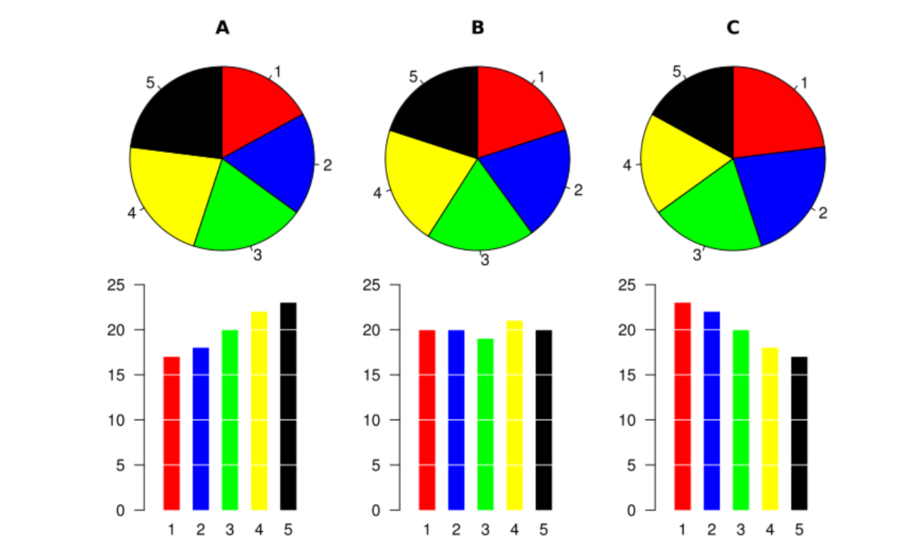
Nota
Y por este motivo, por favor, nunca uséis diagramas circulares para más de dos niveles.
Un gráfico ha de servir más que mil palabras, y tiene que explicar de un vistazo las características más relevantes de los datos que representa. Luego ya se pueden añadir detalles que complementen esta primera comprensión básica. En el caso de un diagrama de barras, su objetivo ha de ser mostrar la relación entre las magnitudes de las frecuencias que representa; si nos interesan sus valores concretos, es mejor dar la tabla. Por ejemplo, en los diagramas de barras de la variable “Sexo” dados más arriba se ve a simple vista que hay aproximadamente el doble de mujeres que de hombres.
Por ese motivo es un pecado mortal modificar un gráfico para que el primer vistazo sea engañoso. En un diagrama de barras, la adulteración más usual, y ante la que hay que estar atentos, es truncarlo de manera que el eje de coordenadas que indique las frecuencias no arranque en el 0. Mirad, por ejemplo, el diagrama de barras siguiente:

Este diagrama sigue indicando que en la muestra hay un 30% de hombres y un 70% de mujeres, pero si le dais un vistazo superficial, sin mirar las marcas del eje vertical, parece que la proporción de mujeres es cinco veces la de los hombres y no un poco más del doble.
Es muy frecuente encontrar diagramas de barras (u otros tipos de gráficos) truncados en medios de comunicación. Por ejemplo mirad el gráfico siguiente,

3.0.2 Tablas de frecuencias multidimensionales
Cuando medimos más de una variable cualitativa sobre un mismo grupo de individuos, representamos sus frecuencias absolutas o relativas mediante tablas de contingencia multidimensionales.
Ejemplo:Continuemos con nuestra muestra de 20 pacientes en residencias geriátricas. Además de su sexo, hemos anotado otras dos características: una variable “Demencia” que recoge si en el momento del ingreso en la residencia habían sido diagnosticados con algún tipo de demencia senil, con niveles “No”, “Alzheimer” y “Otros” (para indicar otros diagnósticos de demencia no-Alzheimer), y una variable “Cancer” que indica si en algún momento han sufrido o no cáncer de mama.
La tabla de datos es la siguiente:
| Sexo | Demencia | Cancer | |
|---|---|---|---|
| 1 | Mujer | No | No |
| 2 | Mujer | Alzheimer | Sí |
| 3 | Hombre | Alzheimer | No |
| 4 | Mujer | Otros | No |
| 5 | Mujer | Alzheimer | No |
| 6 | Mujer | Otros | Sí |
| 7 | Mujer | No | No |
| 8 | Mujer | Alzheimer | No |
| 9 | Hombre | Otros | No |
| 10 | Mujer | Otros | Sí |
| 11 | Hombre | Alzheimer | No |
| 12 | Hombre | Alzheimer | No |
| 13 | Mujer | No | No |
| 14 | Mujer | No | No |
| 15 | Hombre | Alzheimer | No |
| 16 | Mujer | No | Sí |
| 17 | Mujer | No | No |
| 18 | Mujer | No | No |
| 19 | Mujer | Alzheimer | No |
| 20 | Hombre | No | No |
La tabla bidimensional de frecuencias absolutas de las variables “Sexo” y “Demencia”, que nos da la frecuencia absoluta de cada combinación de sexo y tipo de demencia senil, es:
| Alzheimer | Otros | No | |
|---|---|---|---|
| Hombre | 4 | 1 | 1 |
| Mujer | 4 | 3 | 7 |
y la tabla tridimensional de frecuencias absolutas de las tres variables, que nos da la frecuencia absoluta de cada combinación de sexo, tipo de demencia senil y si se ha sufrido o no cáncer de mama, es:
Con Jamovi, estas tablas se obtienen fácilmente separando una variable por la otra (u otras) y marcando las mismas casillas en Exploración/Descriptivas que en el caso unidimensional:
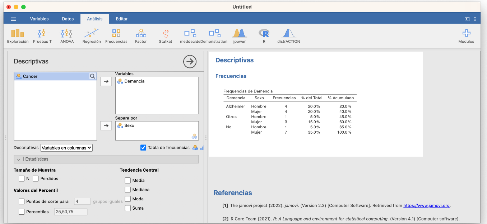
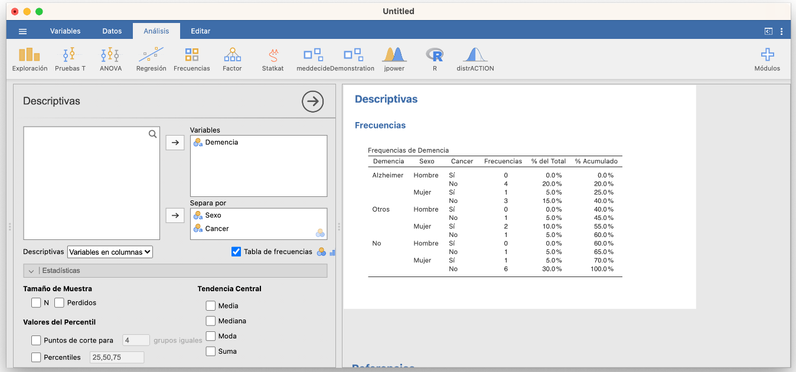
Las tablas bidimensionales se pueden obtener de manera más adecuada en Frecuencias/Muestras independientes: lo explicaremos dentro de un rato.
A menudo es conveniente añadir a una tabla de contingencia multidimensional, filas y columnas marginales (en los márgenes) con las frecuencias totales de cada nivel dentro de cada variable. De esta manera, también tenemos las tablas de frecuencias de cada una de las variables. Por ejemplo, si añadimos la fila y la columna marginales a la tabla bidimensional anterior obtenemos:
| Alzheimer | Otros | No | Total | |
|---|---|---|---|---|
| Hombre | 4 | 1 | 1 | 6 |
| Mujer | 4 | 3 | 7 | 14 |
| Total | 8 | 4 | 8 | 20 |
Las tablas multidimensionales de frecuencias relativas son algo más complicadas porque dichas frecuencias relativas se pueden calcular en el total de la muestra (las llamamos frecuencias relativas globales) o dentro de los niveles de una de las variables (por filas o por columnas, en el caso bidimensional), en función de lo que nos interese medir. Por ejemplo:
- Si nos interesa la fracción de pacientes de cada combinación de sexo y tipo de demencia senil en el total de la muestra, usaremos la tabla de frecuencias relativas globales de las variables “Sexo” y “Demencia”:
| Alzheimer | Otros | No | |
|---|---|---|---|
| Hombre | 0.2 | 0.05 | 0.05 |
| Mujer | 0.2 | 0.15 | 0.35 |
Observad que la suma de todas las entradas de la tabla es 1, lo que indica que estas frecuencias indican proporciones del total de la muestra.
Por ejemplo, la entrada superior izquierda de esta tabla nos dice que los hombres con Alzheimer representan el 20% del total de la muestra. Es decir, si en nuestra muestra \(A\) representa el suceso “Tener Alzheimer” y \(H\) el suceso “Ser hombre”, esta entrada dice que \(P(A\cap H)=0.2\).
- Si nos interesa la fracción de pacientes con cada tipo de demencia senil dentro de cada sexo, usaremos la tabla de frecuencias relativas de la variable “Demencia” dentro de la variable “Sexo”:
| Alzheimer | Otros | No | |
|---|---|---|---|
| Hombre | 0.6667 | 0.1667 | 0.1667 |
| Mujer | 0.2857 | 0.2143 | 0.5000 |
En esta tabla, la suma de las entradas de cada fila es 1, lo que indica que las frecuencias son proporciones dentro de cada fila.
Por ejemplo, la entrada superior izquierda de esta tabla nos dice que los hombres con Alzheimer representan el 66.67% de los hombres de la muestra. Es decir, con las notaciones anteriores, que \(P(A|H)=0.6667\).
- Si nos interesa la fracción de pacientes de cada sexo dentro del grupo de pacientes con cada tipo de demencia senil, usaremos la tabla de frecuencias relativas de la variable “Sexo” dentro de la variable “Demencia”:
| Alzheimer | Otros | No | |
|---|---|---|---|
| Hombre | 0.5 | 0.25 | 0.125 |
| Mujer | 0.5 | 0.75 | 0.875 |
En esta tabla, la suma de las entradas de cada columna es 1, lo que indica que las frecuencias son proporciones dentro de cada columna.
Por ejemplo, la entrada superior izquierda de esta tabla nos dice que los hombres con Alzheimer representan el 50% de los enfermos de Alzheimer de la muestra. O sea, de nuevo con las notaciones anteriores, que \(P(H|A)=0.5\).
En una tabla de contingencia de frecuencias relativas globales, tiene sentido añadir filas y columnas marginales, que nos darán las frecuencias relativas de los niveles de cada variable.
| Alzheimer | Otros | No | Total | |
|---|---|---|---|---|
| Hombre | 0.2 | 0.05 | 0.05 | 0.3 |
| Mujer | 0.2 | 0.15 | 0.35 | 0.7 |
| Total | 0.4 | 0.2 | 0.4 | 1 |
Pero en una tabla de contingencia de frecuencias relativas de una variable respecto de otra no tiene mucho interés. Por ejemplo, añadamos las marginales a la tabla de frecuencias relativas de la variable “Demencia” dentro de la variable “Sexo”:
| Alzheimer | Otros | No | Total | |
|---|---|---|---|---|
| Hombre | 0.6667 | 0.1667 | 0.1667 | 1 |
| Mujer | 0.2857 | 0.2143 | 0.5 | 1 |
| Total | 0.9524 | 0.381 | 0.6667 | 2 |
Como hemos calculado las frecuencias relativas dentro de cada fila, la suma de las frecuencias relativas de cada fila ha de ser 1. Ahora fijaos en la fila Total. Nos dice por ejemplo que la suma de la proporción de hombres que tienen Alzheimer, 0.6667, y de la proporción de mujeres que tienen Alzheimer, 0.2857, es 0.9523. ¿Qué significado tiene este número? Ninguno, y en todo caso de ninguna manera significa que la proporción de individuos con Alzheimer en la muestra sea 0.9523, ya que esta proporción es del 40%.
Nota
A la hora de decidir qué variable asignamos a las filas y cuál a las columnas en una tabla de contingencia bidimensional, es conveniente recordar que, en los paises occidentales, solemos leer las tablas por filas y de izquierda a derecha. Por ello, si tenemos interés en la distribución de los niveles de una variable dentro de los niveles de una segunda variable, puede facilitar la lectura de la tabla que esta segunda variable defina las filas.
Las tablas de contingencia bidimensionales con frecuencias relativas marginales se obtienen con Jamovi en la sección Frecuencias/Muestras independientes. Por ejemplo, si declaramos la variable “Sexo” como la de las filas y la variable “Demencia” como la de las columnas y marcamos Frecuencias observadas en la pestaña Celdas, entonces podemos pedir en las casillas de la columna Porcentajes que se calculen las frecuencias relativas por filas, por columnas o en el total. Por ejemplo, por filas:

Olvidaos por ahora de la tabla “Pruebas de \(\chi^2\)” que aparece en el resultado, ya hablaremos de ella al hablar de contrastes de proporciones. Podéis impedir que aparezca desmarcando la casilla \(\chi^2\) en la pestaña Estadísticas, que sale marcada por defecto.
3.0.3 Diagramas de barras bidimensionales
Una tabla de frecuencias bidimensional se suele representar mediante un diagrama de barras bidimensional, que puede ser:
De barras apiladas: Se escoge una variable (la llamaremos principal), se dibuja una barra para cada uno de sus niveles de altura la frecuencia total de dicho nivel, y cada una de estas barras se divide verticalmente en sectores que representan las frecuencias de los niveles de la otra variable dentro de ese nivel.
Por ejemplo, el diagrama de barras apiladas de frecuencias absolutas de las variables “Sexo” y “Demencia”, tomando la variable “Sexo” como principal:
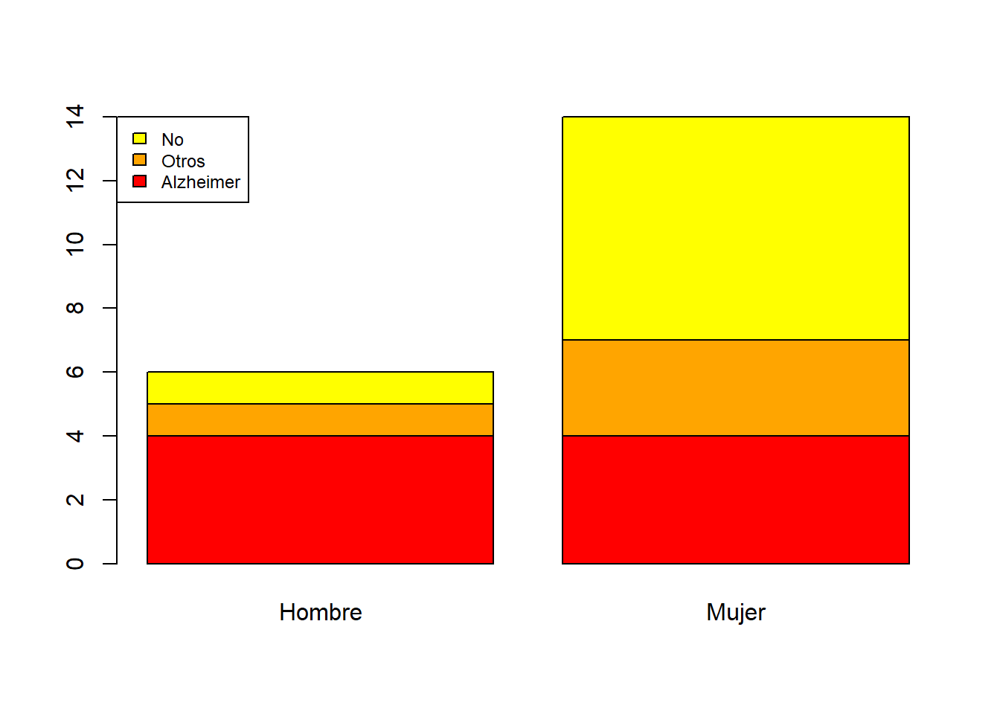
De barras yuxtapuestas. Se escoge una variable principal y para cada uno de sus niveles se dibuja un diagrama de barras de las frecuencias de los niveles de la otra variable.
Así, el diagrama de barras yuxtapuestas de frecuencias absolutas de las variables “Sexo” y “Demencia”, tomando la variable “Sexo” como principal es:
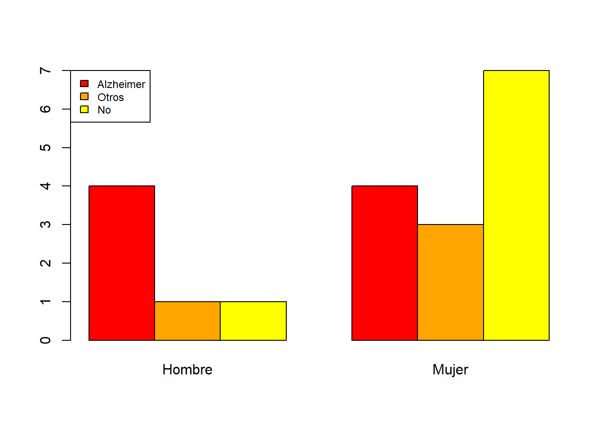
Otros dos ejemplos:
- El diagrama de barras apiladas de frecuencias absolutas de las variables “Sexo” y “Demencia”, tomando la variable “Demencia” como principal es:
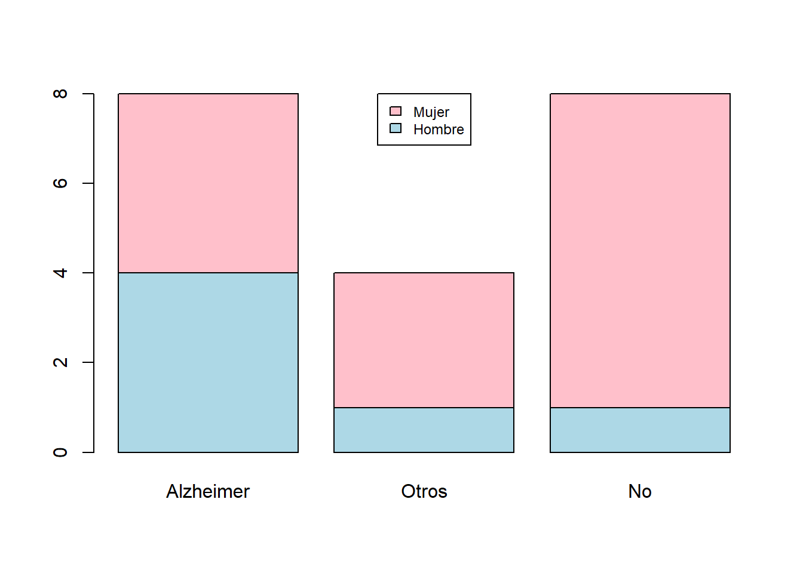
- El diagrama de barras yuxtapuestas de frecuencias absolutas de las variables “Sexo” y “Demencia”, tomando la variable “Demencia” como principal:
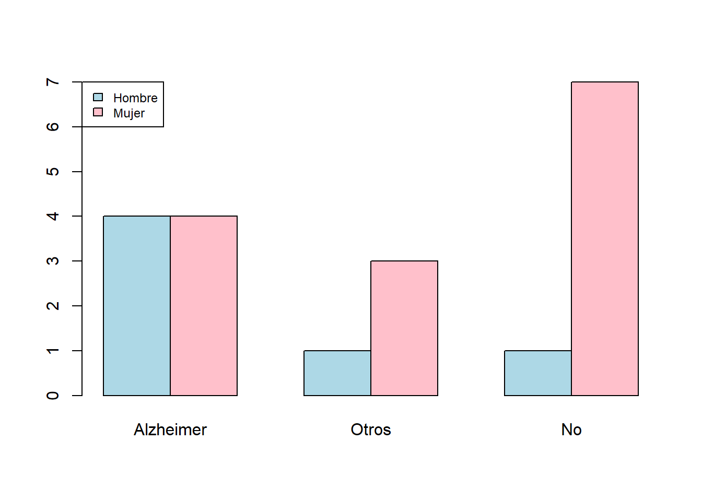
Los diagramas de barras tienen que mostrar la información de la manera más adecuada posible. Por ejemplo, si lo que nos interesa es la distribución de los tipos de demencia por sexo, la variable principal ha de ser el “Sexo”. Si nos interesan las frecuencias relativas globales, seguramente sea más conveniente dar un diagrama de barras tomando como niveles las combinaciones de niveles de ambas variables, como el siguiente diagrama de barras de frecuencias relativas globales de las variables “Sexo” y “Demencia”:
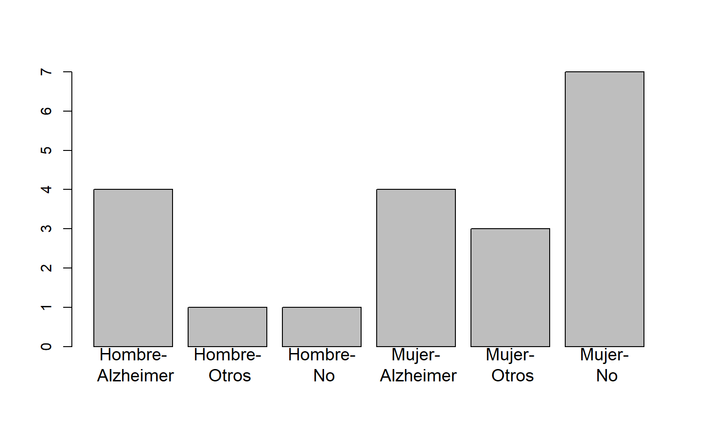
El usar barras apiladas o yuxtapuestas en un diagrama de barras bidimensional ya va más a gusto de cada uno. Como un diagrama de barras yuxtapuestas usa tantas barras como el producto de los números de niveles de las dos variables, si estos dos números son grandes puede necesitar mucho espacio horizontal para ser comprensible. Por otro lado, en los diagramas de barras apiladas es más fácil comparar las frecuencias de los niveles de la variable principal, mientras que en los diagramas de barras yuxtapuestas es más fácil comparar la distribución de los niveles de la variable secundaria dentro de cada nivel de la variable principal.
Lo diagramas de barras bidimensionales se obtienen con las casillas adecuadas de la pestaña Gráficos en Frecuencias/Muestras independientes. Podéis elegir si queréis las barras apiladas (Alineados) o yuxtapuestas (Al lado), si el diagrama de barras ha de ser de frecuencias abolutas o relativas y en este último caso qué tipo de frecuencias relativas (del total, por filas o por columnas) y si la variable principal es la de las filas o las columnas. Por ejemplo, el diagrama de barras yuxtapuestas de frecuencias absolutas de las variables “Sexo” y “Demencia”, tomando la variable “Demencia” como principal, se obtiene de la manera siguiente:
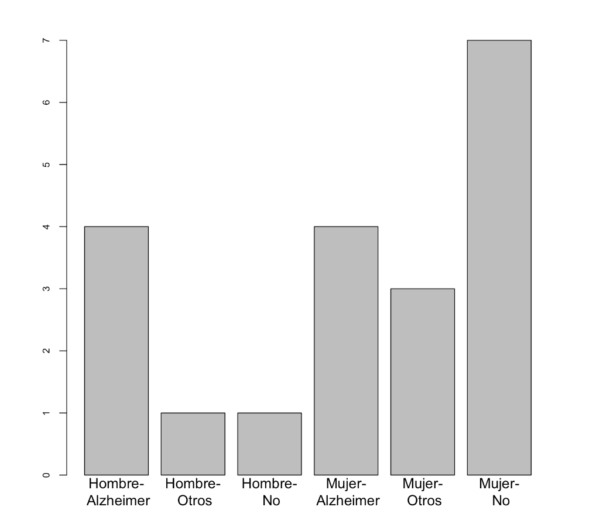
3.0.4 Ejercicio
En un estudio transversal en el que se analizó 75 hombres y 70 mujeres, 40 hombres y 20 mujeres presentaron una determinada enfermedad.
Representad estos datos en un diagrama de barras bidimensional de frecuencias relativas que muestre las proporciones de enfermos y sanos en cada sexo.
¿Qué vale la frecuencia relativa de los hombres entre los participantes que no presentaron la enfermedad?
3.0.5 Diagramas de mosaico
Una tabla tridimensional se puede representar mediante un diagrama de mosaico. Estos gráficos se obtienen sustituyendo cada entrada de la tabla de frecuencias por una región rectangular de área proporcional a su valor. Por ejemplo, los “Sí” y “No” de la fila superior corresponden a la variable “Cancer”:

3.0.6 Descripción de datos ordinales
Los datos ordinales son parecidos a los cualitativos, en el sentido de que son cualidades de objetos o individuos. Su diferencia con los datos cualitativos está en que las características que expresan los datos ordinales tienen un orden natural que permite acumular observaciones, es decir, contar cuántas hay por debajo de cada nivel. Un caso frecuente son las escalas tipo Likert, que se usan para expresar el nivel de acuerdo o desacuerdo con una afirmación mediante respuestas cerradas.
Ejemplo:En una encuesta sobre la actitud de personal sanitario frente al dolor (M. E. Zanolin et al, “A questionnaire to evaluate the knowledge and attitudes of health care providers on pain”, Journal of pain and symptom management 33 (2007), pp. 727-736), se pidió el grado de conformidad con afirmaciones como:
Como los narcóticos pueden causar depresión respiratoria, no se han de usar en pacientes pediátricos.
Es útil dar de entrada un placebo al paciente que se queja de dolor para saber si realmente siente dolor.
según la escala Likert siguiente:
| Nivel | Significado |
|---|---|
| 1 | Muy en desacuerdo |
| 2 | En desacuerdo |
| 3 | Neutral |
| 4 | De acuerdo |
| 5 | Muy de acuerdo |
Las respuestas a este tipo de cuestionarios son números, pero no son datos cuantitativos, sino ordinales: meras abreviaturas de los diferentes grados de conformidad.
Para más información sobre escalas Likert, podéis consultar la correspondiente entrada de la Wikipedia.
Cuando trabajamos con datos ordinales, el orden de los niveles de los datos permite calcular no sólo las frecuencias absolutas y relativas que veíamos en la lección anterior, y que para variables ordinales se definen del mismo modo, sino también frecuencias acumuladas. Es decir, no sólo podemos contar cuántas veces hemos observado un cierto nivel, sino también cuántas veces hemos observado un nivel menor o igual que él. Por lo tanto, su descripción estadística es la misma que para datos cualitativos, más:
Frecuencias absolutas acumuladas: El número de veces que aparece en la muestra un nivel menor o igual que el considerado.
Frecuencias relativas acumuladas: La fracción del total de la muestra que representan los niveles menores o iguales que el considerado.
De nuevo, estas frecuencias acumuladas se pueden recoger en una tabla y representar en forma de diagrama de barras (con los niveles ordenados en orden creciente).
Ejemplo:Tenemos una muestra de 20 estudiantes de quienes sabemos la calificación que han sacado en un examen. Clasificamos estas calificaciones en Suspenso (S), Aprobado (A), Notable (N) y Sobresaliente (E) y consideramos su orden natural S < A < N < E. Las calificaciones que han obtenido son las siguientes:
N, A, A, S, S, A, N, E, A, A, S, S, S, A, E, N, N, E, S, AEn esta lista hay 6 S, 7 A, 4 N y 3 E: éstas serían las frecuencias absolutas de las calificaciones en esta muestra de estudiantes. Por lo que se refiere a sus frecuencias absolutas acumuladas:
- Hay 6 estudiantes que han obtenido S o menos: la frecuencia acumulada de S es 6.
- Hay 13 estudiantes que han obtenido A o menos (6 S y 7 A): la frecuencia acumulada de A es 13.
- Hay 17 estudiantes que han obtenido N o menos (6 S, 7 A y 4 N): la frecuencia acumulada de N es 17.
- Hay 20 estudiantes que han obtenido E o menos (todos): la frecuencia acumulada de E es 20.
La frecuencia relativa acumulada de cada calificación es la fracción del total de estudiantes que representa su frecuencia absoluta acumulada. Por ejemplo, la frecuencia relativa acumulada de notables es la proporción de estudiantes que han sacado un notable o menos, y, por lo tanto, es igual a la frecuencia absoluta acumulada de N dividida por el número total de estudiantes: 17/20=0.85. También se puede obtener “acumulando” las frecuencias relativas de las calificaciones menores o iguales que N: como hay un 30% de S (6 de 20), un 35% de A (7 de 20) y un 20% de N (4 de 20), la frecuencia relativa acumulada de N es 0.3+0.35+0.2=0.85, es decir, un 85%.
Así pues, las frecuencias relativas acumuladas de las calificaciones en esta muestra son:
- Frecuencia relativa acumulada de S: 6/20=0.3.
- Frecuencia relativa acumulada de A: 13/20=0.65.
- Frecuencia relativa acumulada de N: 17/20=0.85.
- Frecuencia relativa acumulada de E: 20/20=1.
Resumimos todos estos valores en la tabla siguiente:
| Frecuencia absoluta | Frecuencia relativa | Porcentaje | Frecuencia absoluta acumulada | Frecuencia relativa acumulada | Porcentaje acumulado | |
|---|---|---|---|---|---|---|
| Suspenso | 6 | 0.30 | 30% | 6 | 0.30 | 30% |
| Aprobado | 7 | 0.35 | 35% | 13 | 0.65 | 65% |
| Notable | 4 | 0.20 | 20% | 17 | 0.85 | 85% |
| Sobresaliente | 3 | 0.15 | 15% | 20 | 1.00 | 100% |
Todos los ancianos recogidos en la tabla de datos del Ejemplo presentado con anterioridad fueron diagnosticados con COVID-19 entre marzo y mayo de 2020. Vamos a ampliar dicha tabla de datos con información sobre la gravedad de su enfermedad, clasificada en cuatro niveles: Asintomática, Leve, Hospitalización (si requirió hospitalización pero no en UCI) y UCI. Consideraremos esta variable como ordinal, con sus niveles ordenados en orden creciente de gravedad.
La tabla de datos ampliada es la siguiente:
| Sexo | Demencia Senil | Cáncer de mama | COVID-19 | |
|---|---|---|---|---|
| 1 | Mujer | No | No | Leve |
| 2 | Mujer | Alzheimer | Sí | UCI |
| 3 | Hombre | Alzheimer | No | Leve |
| 4 | Mujer | Otros | No | Asintomática |
| 5 | Mujer | Alzheimer | No | Leve |
| 6 | Mujer | Otros | Sí | Hospitalización |
| 7 | Mujer | No | No | UCI |
| 8 | Mujer | Alzheimer | No | Leve |
| 9 | Hombre | Otros | No | Leve |
| 10 | Mujer | Otros | Sí | Leve |
| 11 | Hombre | Alzheimer | No | Leve |
| 12 | Hombre | Alzheimer | No | Hospitalización |
| 13 | Mujer | No | No | Leve |
| 14 | Mujer | No | No | Asintomática |
| 15 | Hombre | Alzheimer | No | Leve |
| 16 | Mujer | No | Sí | Asintomática |
| 17 | Mujer | No | No | Leve |
| 18 | Mujer | No | No | Hospitalización |
| 19 | Mujer | Alzheimer | No | Hospitalización |
| 20 | Hombre | No | No | Leve |
Entonces:
- La tabla de frecuencias absolutas de la variable COVID-19 es:
| COVID-19 | Frecs. |
|---|---|
| Asintomática | 3 |
| Leve | 11 |
| Hospitalización | 4 |
| UCI | 2 |
- Su tabla de frecuencias relativas:
| COVID-19 | Frecs. |
|---|---|
| Asintomática | 0.15 |
| Leve | 0.55 |
| Hospitalización | 0.20 |
| UCI | 0.10 |
- Su tabla de frecuencias absolutas acumuladas:
| COVID-19 | Frecs. Acum |
|---|---|
| Asintomática | 3 |
| Leve | 14 |
| Hospitalización | 18 |
| UCI | 20 |
- Su tabla de frecuencias relativas acumuladas:
| COVID-19 | Frecs. Acum |
|---|---|
| Asintomática | 0.15 |
| Leve | 0.70 |
| Hospitalización | 0.90 |
| UCI | 1.00 |
- Su diagrama de barras de frecuencias absolutas acumuladas:
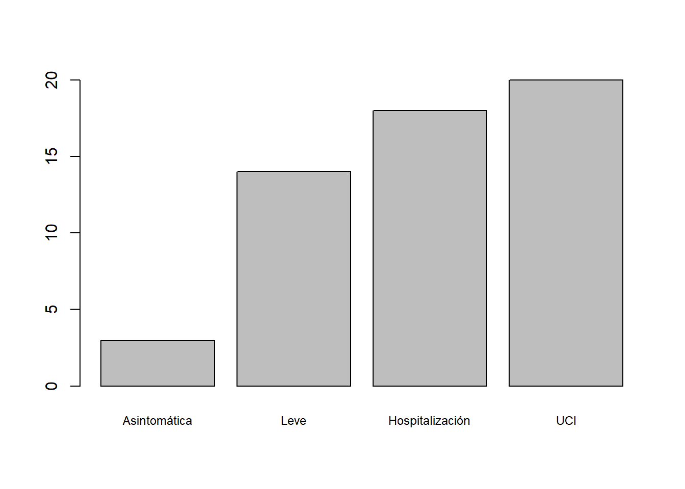
- Su diagrama de barras de frecuencias relativas acumuladas:
- La tabla bidimensional de frecuencias absolutas de las variables Demencia Senil y COVID-19:
| Asintomática | Leve | Hospitalización | UCI | |
|---|---|---|---|---|
| Alzheimer | 0 | 5 | 2 | 1 |
| Otros | 1 | 2 | 1 | 0 |
| No | 2 | 4 | 1 | 1 |
- Su tabla de frecuencias relativas acumuladas dentro de cada nivel de demencia senil:
| Asintomática | Leve | Hospitalización | UCI | |
|---|---|---|---|---|
| Alzheimer | 0.00 | 0.625 | 0.875 | 1 |
| Otros | 0.25 | 0.750 | 1.000 | 1 |
| No | 0.25 | 0.750 | 0.875 | 1 |
- El diagrama de barras yuxtapuestas de esta última tabla:
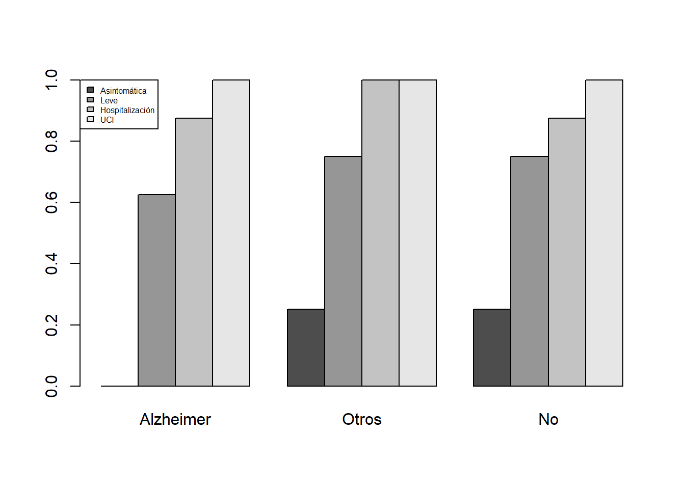
Como vimos antes, Jamovi da las frecuencias acumuladas (si hemos especificado correctamente el orden de los niveles) al calcular tablas de contigencia en Exploración/Descriptivas. En las tablas multidimensionales la acumulación se lleva a cabo en el total, lo que no siempre es conveniente. Para calcular bien tablas bidimensionales acumulando frecuencias por filas o columnas hay que usar R en la ventana de edición R. Por ejemplo, para obtener la tabla de frecuencias relativas acumuladas que hemos dado hace un momento de niveles de gravedad de la COVID dentro de cada nivel de demencia senil podemos usar:

Fijaos en la lógica de la sintaxis de esta instrucción. De dentro a fuera:
table(data$Demencia, data$COVID)calcula la tabla de frecuencias absolutas de las variables Demencia y COVID, con filas la Demencia.prop.table(..., margin=1)calcula la tabla de frecuencias relativas (de proporciones) por filas (margin=1) de la tabla de frecuencias absolutas a la que se aplica en los puntos suspensivos.apply(..., MARGIN=1, FUN=cumsum)aplica la funcióncumsum, que calcula las sumas acumuladas, por filas (MARGIN=1) a la tabla entrada en los puntos suspensivos.
Esta última función transpone nuestra tabla (siempre da el resultado de manera que la dimensión en la que se acumulan las frecuencias sea la de las columnas); si quisiérais mantener los tipos de demencia en la filas, se aplicaría t(...) al resultado del apply.
Ejercicio
Calculad la tabla bidimensional de frecuencias relativas acumuladas de los niveles de gravedad de la COVID-19 en cada sexo, y representad esta tabla por medio de un diagrama de barras yuxtapuestas adecuado.
3.0.7 Descripción de datos cuantitativos
Los datos cuantitativos son los que expresan cantidades que se representan mediante números, tales como los resultados de contar objetos o individuos o de medir pesos, distancias, tiempos o concentraciones.
Como los números reales están ordenados de manera natural, para estudiar una muestra de datos cuantitativos (una variable cuantitativa) podemos usar las frecuencias y las frecuencias acumuladas de sus diferentes valores, como en las variables ordinales. Esto realmente solo es útil cuando en la muestra tenemos pocos valores diferentes.
Como los datos cuantitativos son números reales y tienen el significado de números reales, podemos operar con ellos. Esto nos aporta una multitud de estadísticos, expresiones matemáticas que, aplicadas a un vector de datos cuantitativos, producen valores que expresan diferentes características del mismo.
Supongamos de ahora en adelante que tenemos una muestra formada por \(n\) números, que denotaremos \(x_1,\ldots,x_n\).
En primer lugar tenemos los estadísticos de tendencia central, que dan un valor representativo del conjunto de datos de la variable; los más importantes son:
La moda, que es el valor, o los valores, de máxima frecuencia (absoluta o relativa, tanto da). Normalmente, solo se usa para variables discretas.
La media aritmética: \[ \overline{x}=\frac{x_1+\cdots+x_n}{n} \]
En este curso, cuando hablemos de la media de unos datos nos referiremos siempre a su media aritmética. Hay otros tipos de media, como por ejemplo la media geométrica o la armónica, que no estudiaremos.
La mediana \(Q_{0.5}\), que representa el valor central en la lista ordenada de observaciones. Se define de la manera siguiente. Si denotamos por \[ x_{(1)}\leqslant x_{(2)}\leqslant \cdots \leqslant x_{(n)} \] los datos de la variable cuantitativa ordenados de menor a mayor:
Si \(n\) es impar, su mediana es el dato central: \(x_{(n+1)/2}\).
Por ejemplo, si una muestra está formada por 7 números, su mediana es el cuarto tras ordenarlos de menor a mayor.
Si \(n\) es par, su mediana es la media de los dos datos centrales: \[ \frac{x_{(n/2)}+x_{(n/2+1)}}{2}. \]
Por ejemplo, si una muestra está formada por 8 números, su mediana es la media del cuarto y el quinto tras ordenarlos de menor a mayor.
Tomemos la variable “Hijos” de la Tabla @ref(tab:tablager4), formada por los números
4, 1, 8, 0, 3, 4, 2, 1, 1, 2, 6, 0, 0, 1, 4, 2, 0, 3, 6, 3
En su tabla de frecuencias vemos que la moda son los valores 0 y 1, que empatan en la frecuencia máxima.
Su media es \[ \frac{4+1+8+0+3+\cdots+0+3+6+3}{20}=2.55 \]
Para calcular su mediana, lo primero que hacemos es ordenar de menor a mayor las observaciones, y marcamos su posición dentro del conjunto ordenado:
Como tenemos 20 datos, la mediana será la media aritmética de sus dos valores centrales, los de las posiciones 10 y 11: \(Q_{0.5}=(2+2)/2=2\).
¿Qué les pasa a estos estadísticos si eliminamos el paciente con 8 hijos de la muestra? Los datos son ahora
4, 1, 0, 3, 4, 2, 1, 1, 2, 6, 0, 0, 1, 4, 2, 0, 3, 6, 3
La moda siguen siendo los valores 0 y 1, ya que no hemos modificado sus frecuencias y hemos eliminado observaciones
Su media ahora es \[ \frac{4+1+0+3+\cdots+0+3+6+3}{19}=2.263 \]
Como ahora tenemos 19 observaciones, su mediana será la observación central, es decir, la décima tras ordenarlas de menor a mayor:
Por lo tanto, \(Q_{0.5}=2\).
¿Y qué les pasaría a estos estadísticos si, en la muestra original, hubiéramos cometido un error y al último paciente le hubiéramos anotado 300 hijos en lugar de 3? Los datos así serían:
4, 1, 8, 0, 3, 4, 2, 1, 1, 2, 6, 0, 0, 1, 4, 2, 0, 3, 6, 300
La moda no cambia
La media ahora sería \[ \frac{4+1+8+0+3+\cdots+0+3+6+300}{20}=17.4 \]
Como volvemos a tener 20 números, la mediana sería otra vez la media de las observaciones décima y undécima tras ordenarlas de menor a mayor:
| Posición | 1 | 2 | 3 | 4 | 5 | 6 | 7 | 8 | 9 | 10 | 11 | 12 | 13 | 14 | 15 | 16 | 17 | 18 | 19 | 20 |
| Valor | 0 | 0 | 0 | 0 | 1 | 1 | 1 | 1 | 2 | 2 | 2 | 3 | 3 | 4 | 4 | 4 | 6 | 6 | 8 | 300 |
De nuevo, \(Q_{0.5}=(2+2)/2=2\).
Nota
Es importante observar que:
La moda es el valor más repetido, pero puede ser poco representativa y puede carecer completamente de interés si, por ejemplo, todos los valores de la muestra tienen frecuencias muy parecidas.
La media es poco robusta, en el sentido de que los valores extremos pueden afectarla mucho
La mediana es muy robusta, en el sentido de que los valores extremos la afectan poco
Por este motivo, por ejemplo, a la hora de resumir los salarios españoles, se publican los tres valores:
Es interesante copiar un trozo de la nota de prensa de la que hemos extraído el gráfico, donde se comenta la relación entre la moda, la media y la mediana:
“El salario bruto medio anual en España fue de 24.009,12 euros por trabajador en el año 2018, un 1,5% mayor al año anterior. La diferencia entre este salario medio y el salario más frecuente o modal (de 18.468,93 euros) fue de más de 5.500 euros. Esto significa que había pocos trabajadores con salarios muy altos pero que influyeron notablemente en el salario medio.
“Por otra parte, el salario mediano (que divide al número de trabajadores en dos partes iguales, los que tienen un salario superior y los que tienen un salario inferior) presentó un valor de 20.078,44 euros en 2018.”
Medidas de posición
Las medidas de posición dividen la variable en unas determinadas proporciones; estos valores reciben el nombre de cuantiles. En este sentido, la mediana es también una medida de posición, puesto que divide la variable en dos mitades.
Dada una proporción \(0<p<1\), el cuantil de orden \(p\), o \(p\)-cuantil, de una variable cuantitativa, que denotaremos por \(Q_p\), es el valor más pequeño del conjunto de datos cuya frecuencia relativa acumulada es mayor o igual que \(p\); o sea, el valor más pequeño de la muestra que es mayor o igual que el \(100p\%\) de los valores de la muestra. Dicho de una tercera manera, si tenemos un conjunto de números \(x_1, \ldots, x_n\) y los ordenamos de menor a mayor, \[ x_{(1)}\leqslant x_{(2)}\leqslant \cdots \leqslant x_{(n)}, \] entonces \(Q_p\) es el primer valor \(x_{(i)}\) de esta lista ordenada que deja a su izquierda (incluyéndolo a él) como mínimo la fracción \(p\) de los datos, es decir, \(p\cdot n\) datos.
La excepción a esta regla es el cuantil \(Q_{0.5}\), que es la mediana y se calcula como hemos explicado antes.
Ejemplo:Considera la variable “Hijos” que registra el número de hijos vivos en el momento de ingreso de unos pacientes en sus residencias geriátricas. Sus 20 valores, ordenados de menor a mayor son:
| Posicion | 1 | 2 | 3 | 4 | 5 | 6 | 7 | 8 | 9 | 10 | 11 | 12 | 13 | 14 | 15 | 16 | 17 | 18 | 19 | 20 |
| Valor | 0 | 0 | 0 | 0 | 1 | 1 | 1 | 1 | 2 | 2 | 2 | 3 | 3 | 3 | 4 | 4 | 4 | 6 | 6 | 8 |
Entonces:
El 0.2-cuantil, \(Q_{0.2}\), es el primer elemento en esta lista ordenada que es mayor o igual que el 20% de los datos. Como el 20% de 20 es 4, \(Q_{0.2}\) es el cuarto elemento de la lista ordenada: 0.
El 0.75-cuantil, \(Q_{0.75}\), es el primer elemento en esta lista ordenada que es mayor o igual que el 75% de los datos. Como el 75% de 20 es 15, \(Q_{0.75}\) es el decimoquinto elemento de la lista ordenada: 4.
El cuantil de orden 1/3, \(Q_{1/3}\), es el primer elemento en esta lista ordenada que es mayor o igual que un tercio de los datos. Como un tercio de 20 es 6.66 y pico, \(Q_{1/3}\) es el séptimo elemento de la lista ordenada: 1. Fijaos en que 6/20=0.3, y por lo tanto el sexto elemento de la lista solo es mayor o igual que el 30% de la muestra, no un tercio. Necesitamos el séptimo elemento para llegar al tercio, aunque entonces nos pasemos.
Los cuantiles se calculan a partir de los valores ordenados de la muestra, teniendo en cuenta los valores repetidos. Es decir, si se han observado un 1, un 2, un 3, un 4 y cinco 5, la mediana no es el valor central de 1, 2, 3, 4, 5, sino el de 1, 2, 3, 4, 5, 5, 5, 5, 5, que es 5.
Nota
En realidad, la definición que hemos dado de cuantil es “orientativa”: no hay una regla única para calcular cuantiles de una muestra (salvo la mediana), y se han propuesto varios métodos que pueden dar resultados diferentes; podéis consultar nueve de estos métodos en la entrada sobre cuantiles de la Wikipedia en inglés. La razón de esta diversidad es que a veces el objetivo final del cálculo de un cuantil no es solo descriptivo (dar el menor valor mayor o igual que una fracción \(p\) de la muestra) sino que es inferencial (estimar el menor valor que es mayor o igual que una fracción \(p\) del total de la población) y esta inferencia se puede hacer de muchas maneras, según las propiedades que tenga (o que supongamos que tenga) la población.
¿Qué os recomendamos? No os compliquéis la vida:
- Si calculáis cuantiles a mano, usad la definición que hemos dado, que es la más sencilla de todas
- Si los calculáis con algún paquete estadístico, usad su método por defecto (que seguramente no sea el que hemos explicado)
Algunos cuantiles con nombre propio:
La mediana es el cuantil \(Q_{0.5}\).
Los cuartiles son los cuantiles \(Q_{0.25}\), \(Q_{0.5}\) y \(Q_{0.75}\), y reciben, respectivamente, los nombres de primer cuartil, segundo cuartil (o mediana) y tercer cuartil. \(Q_{0.25}\) será, pues, el menor valor que es mayor o igual que una cuarta parte de los datos, y \(Q_{0.75}\), el menor valor que es mayor o igual que tres cuartas partes de los datos.
Los deciles son los cuantiles \(Q_{p}\) con \(p\) un múltiplo entero de 0.1: el primer decil es \(Q_{0.1}\), el segundo decil es \(Q_{0.2}\), y así sucesivamente.
Los percentiles son los cuantiles \(Q_{p}\) con \(p\) un múltiplo entero de 0.01: \(Q_{0.01}\) es el primer percentil, \(Q_{0.02}\) es el segundo percentil, etc.
Se llama intervalo intercuartílico, \(\mathit{IQI}\), al intervalo cerrado \([Q_{0.25},Q_{0.75}]\). Fijaos que como un 75% de los datos de la muestra son menores o iguales que \(Q_{0.75}\) y, de estos, un 25% son menores o iguales que \(Q_{0.25}\), dentro del \(\mathit{IQI}\) caerán más o menos el 50% de los datos de la muestra, a no ser que haya muchas repeticiones en los extremos del intervalo.
Ejemplo:Seguimos con la variable “Hijos”. Su primer cuartil será su quinto dato tras ordenarlos de menor a mayor; como hay cuatro ceros y cuatro unos, será 1. Su tercer cuartil ya lo hemos calculado antes, es 4. Por lo tanto su intervalo intercuartílico es [1,4]. Este intervalo contiene 14 elementos de la muestra, bastante más de la mitad, porque la muestra contiene muchas repeticiones del 1 y el 4.
Las medidas de posición también se pueden, y se suelen, usar en la descripción de datos ordinales. En este caso, la mediana se define como el primer valor de la muestra mayor o igual que (al menos) la mitad de la muestra. El resto de cuantiles se definen como los hemos definido aquí.
Ejercicio Aquí tenéis una muestra de 14 niveles de glucosa medidos en niños en ayunas:
56, 60, 62, 63, 63, 65, 65, 66, 66, 66, 66, 68, 70, 72
Calculad su:
- Moda
- Media
- Mediana
- Primer y tercer cuartiles
- Porcentaje de elementos de la muestra que caen dentro del intervalo intercuartílico
Medidas de dispersión
Las medidas de dispersión evalúan lo desperdigados que están los datos. Las más importantes son (seguimos suponiendo que nuestra muestra está formada por los números \(x_1,\ldots,x_n\)):
El recorrido, o rango (del inglés range): la diferencia entre el máximo y el mínimo de las observaciones.
El recorrido, o rango, intercuartílico: la diferencia \(\mathit{IQR}=Q_{0.75}-Q_{0.25}\). Id con cuidado, porque también se llama a veces rango intercuartílico a lo que nosotros llamamos intervalo intercuartílico, \([Q_{0.25},Q_{0.75}]\).
La varianza: la media aritmética de las diferencias al cuadrado entre los datos \(x_i\) y su media \(\overline{x}\): \[ s_x^2=\frac{\sum_{i=1}^n (x_i-\overline{x})^2}{n} \]
La desviación típica (o estándard): la raíz cuadrada positiva de la varianza: \(s_x=+\sqrt{s_x^2}\).
La varianza muestral: se define como la varianza, pero usando \(n-1\) en lugar de \(n\) en el denominador: \[ \tilde{s}_x^2 =\frac{\sum_{i=1}^n (x_i-\overline{x})^2}{n-1} \]
La desviación típica muestral: la raíz cuadrada positiva de la varianza muestral: \(\tilde{s}_x=+\sqrt{\tilde{s}_x^2}\).
El coeficiente de variación: la proporción de la media que representa la desviación típica (se usa solo para conjuntos de datos positivos): \(CV_x=s_x/\overline{x}\)
La desviación media respecto de la mediana: la media aritmética de los valores absolutos de las diferencias entre los datos \(x_i\) y su mediana \(Q_{0.5}\): \[ MDM(x)=\frac{\sum_{i=1}^n |x_i-Q_{0.5}|}{n} \]
Ejemplo: Calculemos todos estos valores para nuestra variable “Hijos”
4, 1, 8, 0, 3, 4, 2, 1, 1, 2, 6, 0, 0, 1, 4, 2, 0, 3, 6, 3
Su máximo es 8 y su mínimo 0, por lo tanto su recorrido es 8
Ya hemos calculado en la sección anterior su intervalo intercuartílico, que es [1,4], por lo que su rango intercuartílico es 3.
Como su media es 2.55, su varianza es \[ s^2_x=\frac{(4-2.55)^2+(1-2.55)^2+(8-2.55)^2+\cdots+(3-2.55)^2}{20}=4.8475 \]
Su desviación típica es \[ s_x=\sqrt{4.8475}=2.202 \]
Su varianza muestral es \[ \widetilde{s}^2_x=\frac{(4-2.65)^2+(1-2.65)^2+(8-2.65)^2+\cdots+(3-2.65)^2}{19}=5.1026 \]
Su desviación típica muestral es \[ \widetilde{s}_x=\sqrt{5.1026}=2.259 \]
Su coeficiente de variación es \[ CV_x=\frac{2.202}{2.55}=0.8634 \]
Como su mediana es 2, su desviación media respecto de la mediana es \[ MDM_x=\frac{|4-2|+|1-2|+|8-2|+\cdots+|3-2|}{20}=1.75 \]
Nota
La diferencia entre la varianza y la varianza muestral, aparte de la tilde \(\widetilde{\ }\) en el símbolo de la muestral, es el denominador, que es \(n\) para la primera y \(n-1\) para la segunda. Por lo tanto, se puede pasar de una a otra simplemente cambiando el denominador: \[ \widetilde{s}^2_x=\frac{n}{n-1}\cdot s^2_x. \] Y tomando raíces cuadradas: \[ \widetilde{s}_x=\sqrt{\frac{n}{n-1}}\cdot s_x. \]
El motivo de distinguir entre la varianza y la varianza muestral es su aplicación en la estimación de la varianza de la variable poblacional:
Por un lado, es natural medir la variabilidad de un conjunto de datos cuantitativos mediante su varianza “a secas”, definida como la media de las distancias (al cuadrado) de los datos a su valor promedio.
Por lo tanto, si nuestro objetivo final es puramente la descripción de nuestro conjunto de datos, usar la varianza verdadera es lo correcto.
Pero, por otro lado, nuestro conjunto de datos será, normalmente, una muestra de una población, y lo más seguro es que, en realidad, la varianza de nuestra muestra nos interese sobre todo como estimación de la varianza de toda la población, es decir, de la varianza poblacional.
Pues bien, como veremos más adelante, resulta que la varianza verdadera de una muestra da valores en promedio más pequeños que la varianza real de la población, mientras que la varianza muestral da valores alrededor de la varianza poblacional. Por lo tanto, si nuestro objetivo es estimar la varianza de la población, lo correcto es usar la varianza muestral.
De todas formas, para muestras grandes, la diferencia no es importante: si \(n\) es grande, dividir por \(n\) o por \(n-1\) no significa una gran diferencia, y sobre todo si tenemos en cuenta que se trata de estimar la varianza de la población, no de calcularla exactamente.
Nota
¿Y por qué definimos la varianza y desviación típica, si ambas medidas dan una información equivalente, ya que la segunda es la raíz cuadrada de la primera?
El motivo es que si los elementos de una variable cuantitativa tienen unidades (metros, años, individuos por metro cuadrado…), sus varianzas (“a secas” y muestral) tienen estas unidades al cuadrado; por ejemplo, si los \(x_i\) son años, los valores de \(s_x^2\) y \(\tilde{s}_x^2\) representan años al cuadrado. En cambio, las desviaciones típicas tienen las mismas unidades que los datos, por lo que se pueden comparar con ellos, y de ahí su utilidad.
¿Y el coeficiente de variación? ¿Cuándo conviene usarlo?
Si queremos comparar la dispersión de dos variables con datos de la misma naturaleza, por ejemplo alturas, pero medidos en unidades diferentes, por ejemplo una en metros y la otra en centímetros, no es correcto usar medidas como la varianza o la desviación típica que dependan de las unidades. En este caso es más recomendable usar el coeficiente de variación \(CV_x\). Mirad el ejemplo siguiente.
Ejemplo: Considerad las alturas de los niños recogidos en la Tabla de inicio del capítulo, que, medidas en cm, eran
135, 132, 138, 141, 134, 136
Su media es \[ \overline{x}=\frac{135+ 132+138+141+134+136}{6}=136\ \text{cm} \] y desviación típica es \[ s_x=\sqrt{\frac{(135-136)^2+(132-136)^2+(138-136)^2+(141-136)^2+(134-136)^2}{6}}=2.887\ \text{cm} \]
Si damos estas alturas en metros,
1.35, 1.32, 1.38, 1.41, 1.34, 1.36
su media es \[ \overline{x}=\frac{1.35+ 1.32+1.38+1.41+1.34+1.36}{6}=1.36\ \text{m} \] y desviación típica es \[ s_x=\sqrt{\frac{(1.35-1.36)^2+(1.32-1.36)^2+(1.38-1.36)^2+(1.41-1.36)^2+(1.34-1.36)^2}{6}}=0.02887\ \text{m} \]
La desviación típica de las alturas en centímetros es 100 veces mayor que la de las alturas en metros, pero sería incorrecto decir que las primeras son más dispersas que las segundas, ya que en realidad se trata de los mismos datos. La diferencia se debe simplemente a las unidades en las que las hemos medido.
En cambio, en ambos casos el coeficiente de variación es el mismo: \[ \frac{2.887}{136}=\frac{0.02887\cdot 100}{1.36\cdot 100}=\frac{0.02887}{1.36}=0.0212 \]
La varianza tiene las propiedades matemáticas siguientes:
\(s_x^2\geqslant 0\), porque es una suma de cuadrados de números reales.
Si \(s_x^2=0\), todos los sumandos \((x_i-\overline{x})^2\) son 0 y, por lo tanto, todos los datos son iguales a su media. La implicación al revés también es cierta: si todos los datos son iguales, su media es igual a este mismo valor común, y por lo tanto todos los sumandos \((x_i-\overline{x})^2\) son 0. Así pues, \(s_x^2=0\) significa que todos los datos son iguales.
A partir de la fórmula dada para \(s_x^2\) y operando astutamente se obtiene la fórmula siguiente, que os puede ser útil: \[ s_x^2= \frac{\sum_{i=1}^n x_i^2}{n}-\overline{x}^2 \] Es decir, la varianza es la media de los cuadrados, menos el cuadrado de la media.
La mayoría de paquetes estadísticos, Jamovi incluido, llevan funciones para calcular la varianza y la desviación típica (sin más aclaraciones) que, en realidad, calculan sus versiones muestrales. El motivo es que priman su aspecto inferencial sobre el descriptivo.
Ejercicio Seguimos con nuestra muestra de 14 niveles de glucosa medidos en niños en ayunas:
56, 60, 62, 63, 63, 65, 65, 66, 66, 66, 66, 68, 70, 72
Calculad su:
- Recorrido
- IQR
- Varianza
- Desviación típica
- Varianza muestral
- Desviación típica muestral
- Coeficiente de variación
¿Qué varianza y desviación típica calcula vuestra calculadora?
Diagramas de puntos y de caja
En un diagrama de puntos (stripchart) dibujamos todos los valores de una muestra en una columna. Si hay valores repetidos, los separamos horizontalmente, para poder ver su frecuencia.
Ejemplo: Consideremos los 14 niveles de glucosa usados en ejercicios anteriores:
56, 60, 62, 63, 63, 65, 65, 66, 66, 66, 66, 68, 70, 72
Su diagrama de puntos es
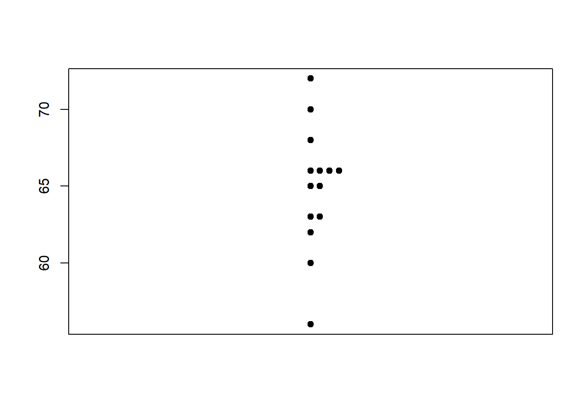
Los diagramas de puntos solo son útiles cuando tenemos pocos valores en la muestra, de manera que valga la pena verlos todos. Cuando la muestra es grande, pongamos de 20 o más números, se suelen reemplazar por un gráfico que resume algunos estadísticos de la muestra llamado un diagrama de caja (boxplot). La estructura básica de un diagrama de caja es la que muestra la siguiente figura.
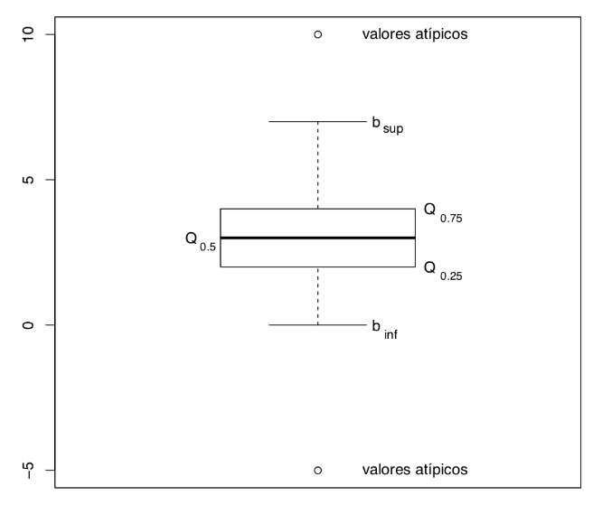
En este gráfico:
La línea gruesa que divide la caja marca la mediana
Los lados inferior y superior de la caja representan los cuartiles \(Q_{0.25}\) y \(Q_{0.75}\). Por lo tanto:
- la altura de la caja es igual al rango intercuartílico \(\mathit{IQR}\)
- la caja contiene alrededor del 50% de los valores de la muestra
Los valores \(b_{inf}, b_{sup}\) son los bigotes (whiskers) del gráfico y se calculan de la manera siguiente:
El bigote inferior \(b_{inf}\) es el menor valor de la muestra que es mayor o igual que \(Q_{0.25}- 1.5\cdot \mathit{IQR}\)
El bigote superior \(b_{sup}\) es el mayor valor de la muestra que es menor o igual que \(Q_{0.75}+1.5\cdot\mathit{IQR}\)
Si hay datos más allá de los bigotes, se llaman valores atípicos o anómalos, outliers en inglés, y se marcan como puntos aislados.
Nota
Como su nombre indica, estos valores atípicos son valores que consideramos “muy raros”. Antes de llevar a cabo un estudio inferencial a partir de una muestra, es conveniente dar un vistazo a sus valores atípicos, si los hay. ¿Son datos legítimos? ¿Son errores? ¿Corresponden a individuos con características especiales que conviene no tener en cuenta en el estudio?
El inventor de los diagramas de caja, John Tukey, tomó el 1.5 en la definición de los bigotes como un compromiso entre 1 (salían demasiados valores atípicos) y 2 (demasiado pocos). Volveremos sobre esto más adelante.
Ejemplo:
Vamos a dibujar el diagrama de caja de los 14 niveles de glucosa usados en ejercicios anteriores, y que damos ordenados de menor a mayor:
56, 60, 62, 63, 63, 65, 65, 66, 66, 66, 66, 68, 70, 72
Tenemos que \(Q_{0.25}=63\), \(Q_{0.5}=65.5\) y \(Q_{0.75}=66\). Esto nos define la caja central.
\(b_{inf}\) será el primer valor de la muestra ordenada que es mayor o igual que \(63- 1.5\cdot 3=58.5\). Es el 60.
\(b_{sup}\) será el último valor de la muestra ordenada que es menor o igual que \(66+ 1.5\cdot 3=70.5\). Es el 70.
Hay dos valores atípicos: el 56, que es menor que \(b_{inf}\), y el 72, que es mayor que \(b_{sup}\).
El resultado es el siguiente, en el que hemos superpuesto el diagrama de puntos para comprender mejor cómo hemos obtenido el diagrama:
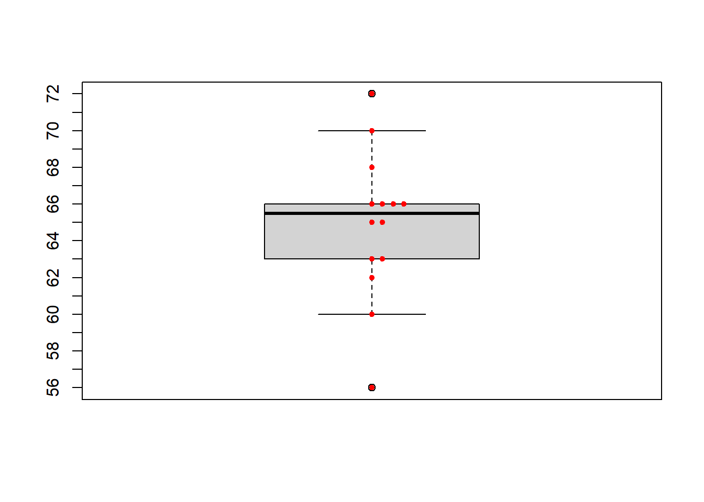
Ejercicio Dibujad el diagrama de puntos de la variable “Hijos” y superponedle su diagrama de caja. El resultado debería ser:
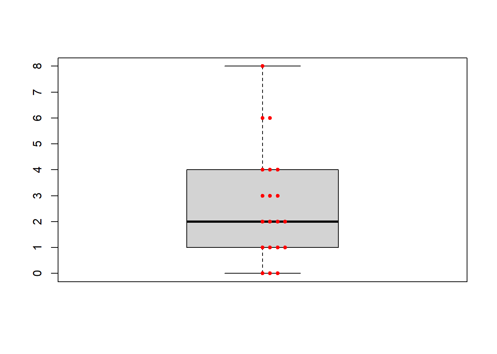
Precaución
En los gráficos anteriores hemos superpuesto el diagrama de puntos al diagrama de caja para ayudar a comprender cómo se construye este último, pero en la vida real esto no se hace: se da un gráfico u otro, nunca los dos.
Nota
Los bigotes y los valores atípicos son siempre elementos de la muestra. La mediana no siempre (puede obtenerse como la media de dos valores de la muestra y no pertenecer a la muestra), y con nuestra definición los cuartiles pertenecen a la muestra, pero con otras definiciones no tienen por qué.
Histogramas
Un histograma es una representación gráfica de un conjunto de datos cuantitativos continuos, consistente en dividir el intervalo de valores entre el mínimo y el máximo en intervalos contiguos y disjuntos, llamado clases, y dibujar entonces una especie de diagrama de barras de estas clases con las particularidades siguientes:
Las barras se dibujan sin espacios entre ellas (para representar la continuidad de los datos)
Si se trata de un histograma de frecuencias absolutas (en el que las barras representan las frecuencias absolutas de las clases) y todas las clases tienen la misma amplitud, las alturas de las barras son las frecuencias de las clases
En cualquier otro caso (es decir, si se trata de un histograma de frecuencias relativas o si es un histograma de frecuencias absolutas pero no todas las clases tienen la misma longitud), las alturas de las barras han de ser tales que las áreas de las barras sean iguales a las frecuencias de las clases
En realidad:
Importante
En un histograma lo que representa la frecuencia de la clase es siempre el área de su barra.
Pero si todas las clases tienen la misma amplitud, las áreas de las barras serán sus alturas por la longitud común de las bases, y por lo tanto proporcionales a las alturas. En este caso, y solo en este caso, podemos interpretar que las alturas representan las frecuencias. Pero en la práctica, y por motivos que se entenderán al hablar de variables aleatorias en el próximo tema, esta representación de las frecuencias por medio de las alturas solo se lleva a cabo para frecuencias absolutas.
Ejemplo:
Consideremos la siguiente muestra de 30 alturas de estudiantes:
1.71,1.62,1.72,1.76,1.78,1.73,1.67,1.64,1.63,1.68,1.68,1.70,1.67,1.56,1.66,
1.57,1.69,1.68,1.67,1.75,1.61,1.60,1.74,1.70,1.65,1.55,1.82,1.70,1.69,1.81El gráfico siguiente muestra el diagrama de barras de sus frecuencias absolutas, tomando como posibles niveles todas las alturas entre su mínimo y su máximo redondeadas a cm. Todas la barras tienen alturas entre 0 y 3, y salvo una mayor presencia de los valores centrales (entre 1.67 y 1.70), no hay mucho más que salte a la vista en este gráfico.
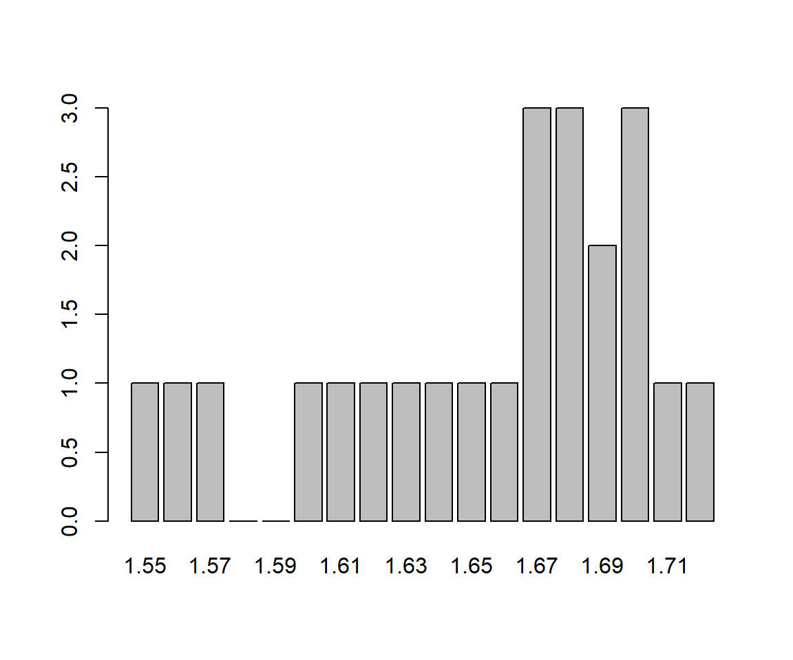
Ahora vamos a agrupar estas alturas en intervalos de 5cm. Como el valor mínimo de la muestra es 1.55 y el máximo es 1.82, vamos a tomar las clases 1.55-1.59, 1.60-1.64, 1.65-1.69,1.70-1.74,1.75-1.79, 1.80-1.84. Dibujando el diagrama de barras de las frecuencias absolutas de estas clases sin dejar espacios entre las barras, obtenemos el histograma siguiente:
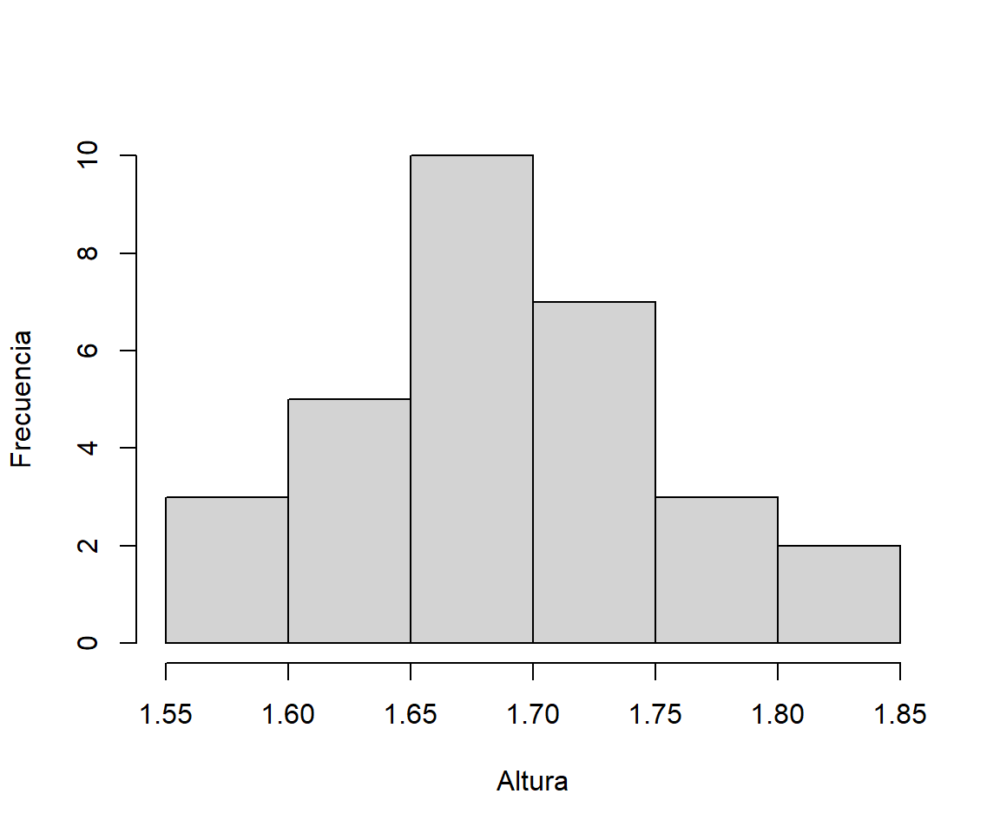
La distribución de estas alturas es mucho más fácil de entender mediante este gráfico que con el primero.
Importante
Por sistema, en nuestros histogramas las clases serán siempre cerradas a la izquierda y abiertas a la derecha: es decir, el extremo izquierdo de una barra pertenece a su clase, pero el extremo derecho no. Lo hacemos para que sean consistentes con las distribuciones de variables aleatorias que definiremos en los próximos temas. Pero fuera de estas notas, cada paquete estadístico hace lo que consideraron oportuno sus creadores, y puede que el convenio de sus histogramas sea que el extremo izquierdo de una barra no pertenezca a la clase y el extremo derecho sí. Por ejemplo, así es como los produce Jamovi por defecto.
Ahora bien, el número de clases ya depende de los intereses del investigador; números de clases diferentes muestran efectos diferentes. Una posible regla general para decidir el número de clases que normalmente da buenos resultados es tomar alrededor de \(\sqrt{n}\) clases (donde \(n\) indica el tamaño de la muestra) pero no menos de 5 clases ni más de 15.
Ejemplo:
Tenemos una muestra de tensiones arteriales medias de 120 adultos.
Si tomamos 5 clases, con las frecuencias
| Clase | Frecuencia |
|---|---|
| [80,100) | 6 |
| [100,120) | 49 |
| [120,140) | 45 |
| [140,160) | 18 |
| [160,180) | 2 |
obtenemos el histograma
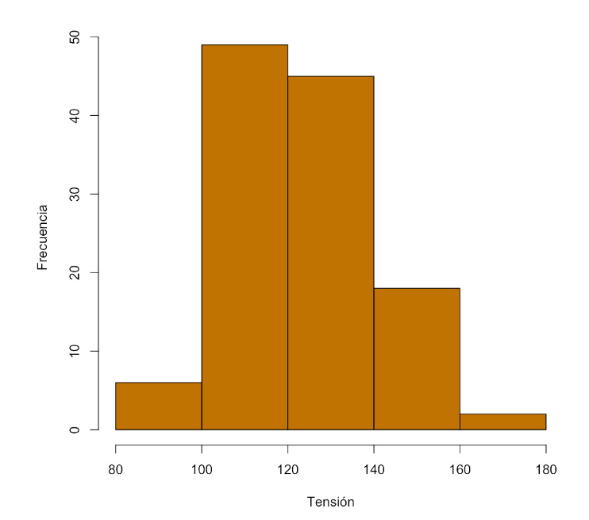
Si tomamos 9 clases, con las frecuencias
| Clase | Frecuencia |
|---|---|
| [80,90) | 3 |
| [90,100) | 3 |
| [100,110) | 16 |
| [110,120) | 33 |
| [120,130) | 23 |
| [130,140) | 22 |
| [140,150) | 13 |
| [150,160) | 5 |
| [160,170) | 2 |
obtenemos el histograma
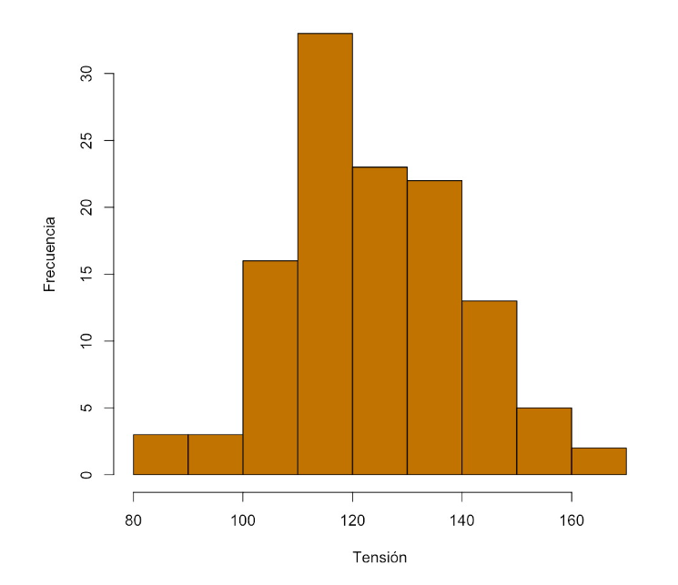
Y si tomamos 15 clases, con las frecuencias
| Clase | Frecuencia |
|---|---|
| [80,85) | 1 |
| [85,90) | 2 |
| [90,95) | 1 |
| [95,100) | 2 |
| [100,105) | 6 |
| [105,110) | 10 |
| [110,115) | 13 |
| [115,120) | 20 |
| [120,125) | 9 |
| [125,130) | 14 |
| [130,135) | 13 |
| [135,140) | 9 |
| [140,145) | 9 |
| [145,150) | 4 |
| [150,155) | 3 |
| [155,160) | 2 |
| [160,165) | 2 |
obtenemos el histograma
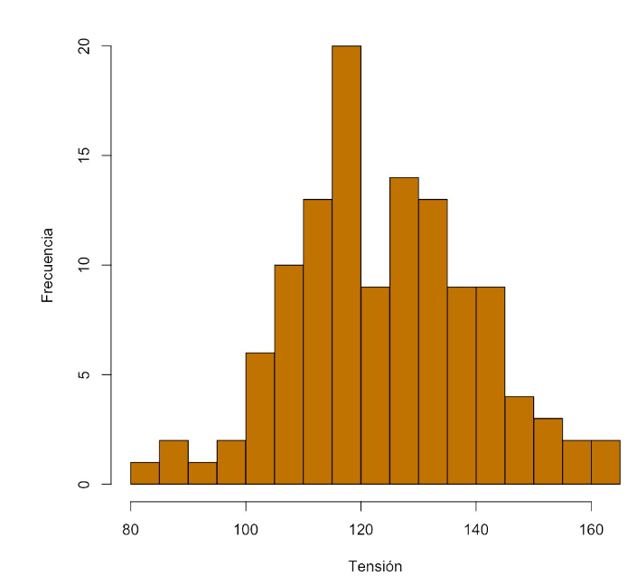
En este último histograma, con más resolución, podemos observar dos picos que en los otros no aparecen.
Como hemos comentado, los histogramas también pueden ser de frecuencias relativas: en este caso, tanto si todas las clases tienen la misma amplitud como si no, las alturas de las cajas han de ser los valores tales que el área de la barra sea la frecuencia relativa de la clase. Estas alturas son las densidades de las clases. Es decir:
La frecuencia relativa de cada clase es el tamaño de la clase (la base de la barra) por su densidad (la altura de la barra).
De esta manera, la suma de las áreas de las barras será 1. Como también ya hemos comentado, veremos la justificación de esta convención en el próximo tema, sobre Variables Aleatorias.
Así, en el ejemplo anterior para 9 clases, las frecuencias relativas y las densidades serían
| Clase | Frec. absoluta | Frec. relativa | Densidad |
|---|---|---|---|
| [80,90) | 3 | 0.025 | 0.0025 |
| [90,100) | 3 | 0.025 | 0.0025 |
| [100,110) | 16 | 0.133 | 0.0133 |
| [110,120) | 33 | 0.275 | 0.0275 |
| [120,130) | 23 | 0.192 | 0.0192 |
| [130,140) | 22 | 0.183 | 0.0183 |
| [140,150) | 13 | 0.108 | 0.0108 |
| [150,160) | 5 | 0.042 | 0.0042 |
| [160,170) | 2 | 0.017 | 0.0017 |
y el histograma de frecuencias relativas a que dan lugar es
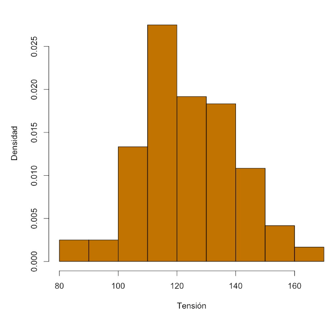
Asimetría y curtosis
Terminamos la descripción de variables cuantitativas con otros dos estadísticos que a veces se usan en la literatura médica, y por tanto conviene que conozcáis, pero que nosotros no usaremos, porque son inútiles: las propiedades que describen se ven mejor con un histograma o un diagrama de barras, y no sirven para estimar la correspondiente propiedad de la variable poblacional (que en todo caso es la interesante).
Dada una muestra de datos numéricos \(x_1,\ldots,x_n\), de media \(\overline{x}\) y desviación típica \(s_x\):
El coeficiente de asimetría (skewness) es \[ \gamma_1=\frac{1}{s_x^3}\cdot \frac{\sum_{i=1}^n (x_i-\overline{x})^3}{n} \]
El coeficiente de curtosis, o apuntamiento, es \[ \beta_2=\frac{1}{s_x^4}\cdot \frac{\sum_{i=1}^n (x_i-\overline{x})^4}{n}-3 \]
Empecemos con el coeficiente de asimetría. Como su nombre indica, cuantifica la asimetría de la variable. Para definir esta característica, lo más práctico es dibujar un histograma o un diagrama de barras de la variable y considerar el eje vertical pasando por la mediana, que divide la muestra en dos partes del mismo tamaño. Llamaremos colas a los trozos del histograma a ambos lados de este eje. Entonces:
- La variable es simétrica si ambas colas son similares, como en los dos gráficos siguientes:
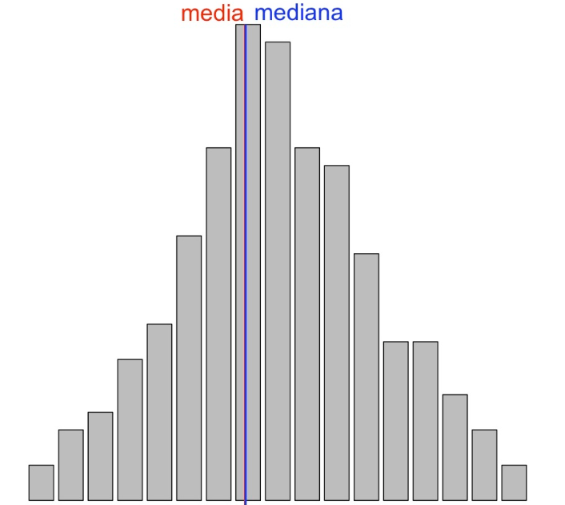 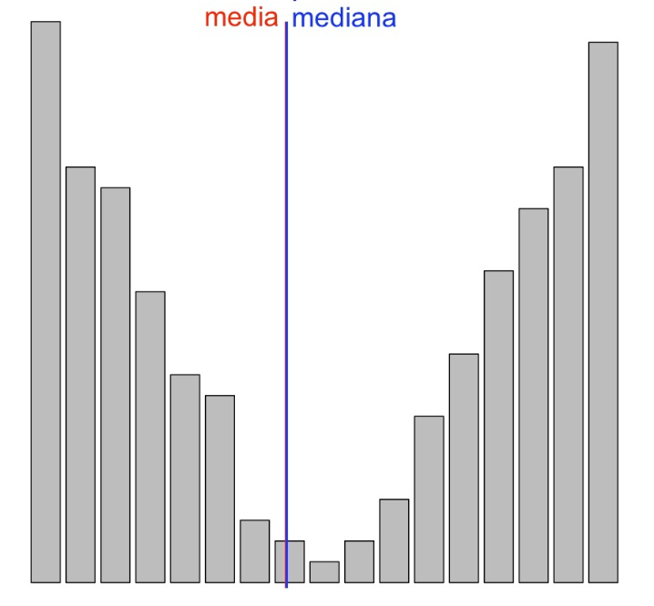
Esta última diremos que **tiene forma de U**, por motivos obvios.- La variable tiene asimetría negativa o a la izquierda cuando la cola de la izquierda es más larga que la de la derecha, en el sentido de que hay más valores más alejados de la mediana por la izquierda que por la derecha. En este caso se suele decir que la variable presenta una cola a la izquierda (aunque con la definición que hemos dado la variable siempre tiene una cola a cada lado).
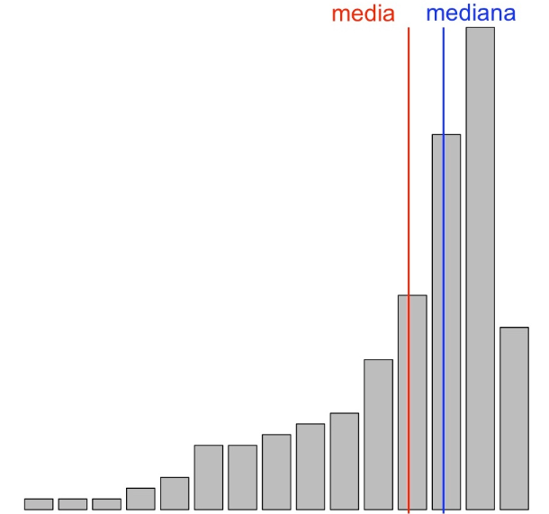
- La variable tiene asimetría positiva o a la derecha cuando la cola de la derecha es más larga que la de la izquierda, en el sentido de que hay más valores más alejados de la mediana por la derecha que por la izquierda. En este caso también diremos que la variable presenta una cola a la derecha.
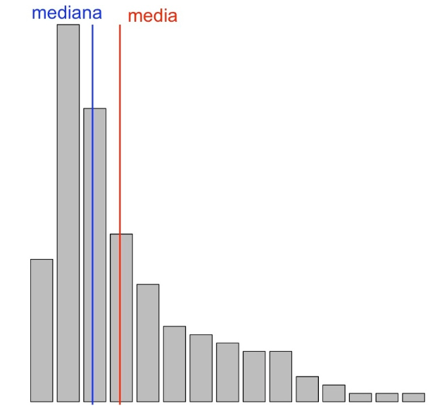
Habréis observado que en los histogramas anteriores hemos dibujado las líneas verticales sobre la media y la mediana.
En una variable simétrica, la simetría hace que la media y la mediana sean aproximadamente iguales
En una variable asimétrica a la izquierda, la existencia de valores relativamente muy pequeños en el extremo de la cola de la izquierda suele desplazar la media hacia la izquierda de la mediana, de manera que la media suele ser más pequeña que la mediana.
Y al revés, en una variable asimétrica a la derecha, la existencia de valores relativamente muy grandes en el extremo de la cola de la derecha suele desplazar la media hacia la derecha de la mediana, de manera que la media suele ser más grande que la mediana.
Precaución
En los puntos anteriores hemos descrito lo que “suele pasar” con la media y la mediana en variables asimétricas, pero no siempre pasa. Así, si la media de un vector de datos es bastante más grande que la mediana, suele ser señal de que la muestra es asimétrica a la derecha, pero solo lo “suele ser”: con un poco de imaginación se puede construir un vector asimétrico a la izquierda con la media a la derecha de la mediana. Pensadlo un poco.
Pues bien, el coeficiente de asimetría \(\gamma_1\) indica el tipo de asimetría de la variable:
- Cuando \(\gamma_1\approx 0\), la distribución de los datos es simétrica
- Cuando \(\gamma_1< 0\), la variable es asimétrica negativa, con cola a la izquierda
- Cuando \(\gamma_1> 0\), la variable es asimétrica positiva, con cola a la derecha
La mejor manera de decidir la asimetría de una variable es por medio de un histograma, aunque a menudo también se puede ver en un diagrama de caja, como muestran los gráficos siguientes:
Un histograma y diagrama de caja de una variable simétrica:
Un histograma y diagrama de caja de una variable asimétrica a la izquierda: 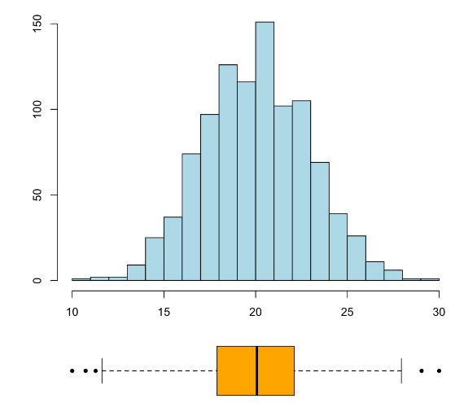
Un histograma y diagrama de caja de una variable asimétrica a la derecha: 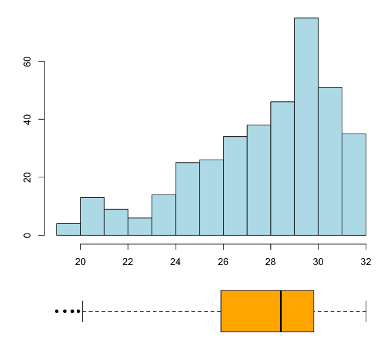
::: {.callout-important} Usar la media y la desviación típica (o la varianza) para describir el “valor central” de una variable y cuantificar su dispersión, respectivamente, es lo adecuado solo cuando la variable es bastante simétrica: más aún, solo cuando es bastante simétrica y su histograma recuerda la forma de una campana de Gauss; es decir, por ejemplo, no cuando tiene forma de U. Cuando el histograma es simétrico y con una forma parecida a una campana de Gauss (lo que llamaremos se ajusta a una variable normal en las próximas lecciones), el intervalo \(\overline{x}\pm s_x\) suele contener aproximadamente unos 2/3 de los datos de la muestra.
Pero para variables muy asimétricas o simétricas en forma de U es mejor usar la mediana y el intervalo intercuartílico. Recordad que este último contiene más o menos el 50% de la muestra.
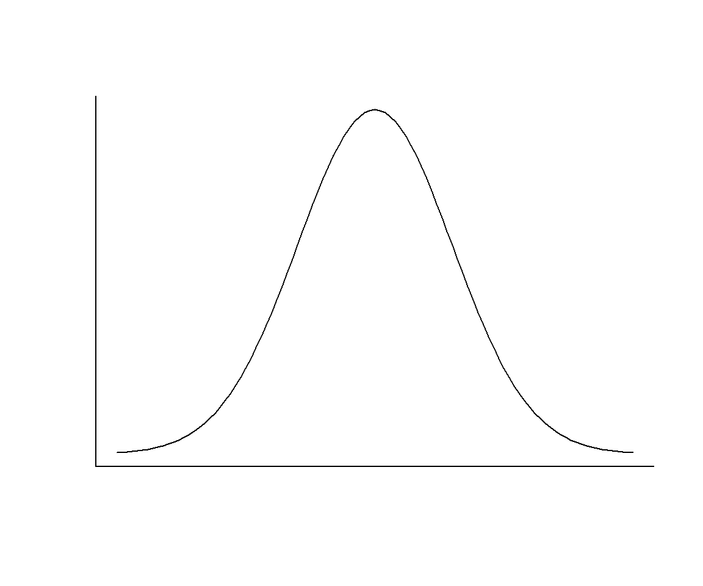
Ejemplo: Considerad la variable (asimétrica a la derecha) que tiene el histograma siguiente:
Resulta que su media es \(\overline{x}=3.1\) y su desviación típica es \(s_x=2.5\), y que el intervalo \([\overline{x}-s_x,\overline{x}+s_x]\) contiene un 84% de la muestra. Su mediana es \(Q_{0.5}=2.3\), a la izquierda de la media, y su intervalo intercuartílico \(IQI\) es [1.3,4.2]. Por cierto, su coeficiente de asimetría es \(\gamma_1=1.7\), lo que es consistente con su cola a la derecha.
Considerad ahora la variable más o menos simétrica siguiente:
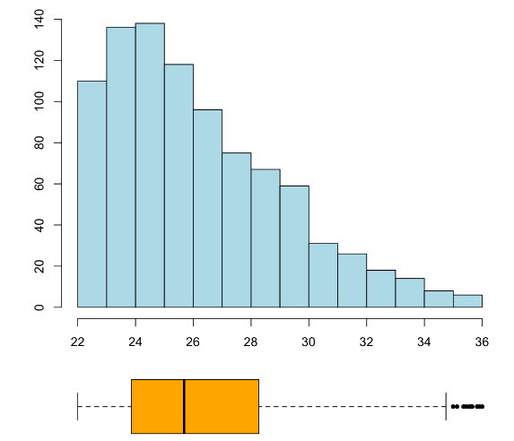
Resulta que su media es \(\overline{x}=2.9\) y su desviación típica es \(s_x=1.1\), y que el intervalo \([\overline{x}-s_x,\overline{x}+s_x]\) contiene un 64% de la muestra. Su mediana es \(Q_{0.5}=3\), muy cercana a su media, y su \(IQI\) es [2.2, 3.7]. Su coeficiente de asimetría es \(\gamma_1=-0.03\), lo que es consistente con su simetría.
Considerad finalmente la variable siguiente, que es simétrica pero en forma de U:
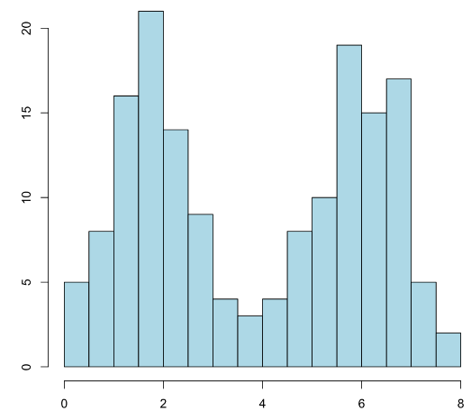
Resulta que su media es \(\overline{x}=3.9\) y su desviación típica es \(s_x=2.2\), pero el intervalo \([\overline{x}-s_x,\overline{x}+s_x]\) contiene solo el 52% de la muestra. Su mediana es también \(Q_{0.5}=3.9\) y su \(IQI\) es [1.8,5.9]. Su coeficiente de asimetría es \(\gamma_1=0.0007\).
Nota
Los tres tipos de simetría/asimetría se generalizan de manera inmediata a variables poblacionales, a partir de alguna representación gráfica de su distribución.
Por ejemplo, si recordáis el gráfico de la distribución de los salarios anuales españoles (Figura @ref(fig:salaris)), presenta una clara asimetría a la derecha que arrastra el salario medio a la derecha del mediano.
Nota
El 1.5 en la definición de los bigotes en los diagramas de caja es tal que, si la variable “se ajusta a una variable normal” (su histograma se parece a una campana de Gauss), se espere alrededor de un 0.35% de valores atípicos a cada lado de la caja.
Ejercicio En un examen, un 60% de los estudiantes han sacado una nota superior a la media. ¿Cómo esperáis que sea la muestra de notas: simètrica, con cola a la izquierda, con cola a la derecha?
No nos hemos olvidado del coeficiente de curtosis, \(\beta_2\). Este estadístico compara la longitud de las colas de la muestra con las que esperaríamos si su histograma se pareciera al de una campana de Gauss.
- Cuando el histograma se parece al de una campana de Gauss, \(\beta_2\approx 0\): se dice que la variable es mesocúrtica.
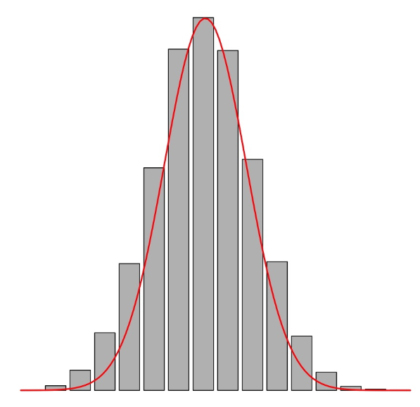
- Cuando el histograma tiene colas más largas, y en particular más valores atípicos, de lo esperado si tuviera la forma de una campana de Gauss, \(\beta_2> 0\); se dice que la variable es leptocúrtica.
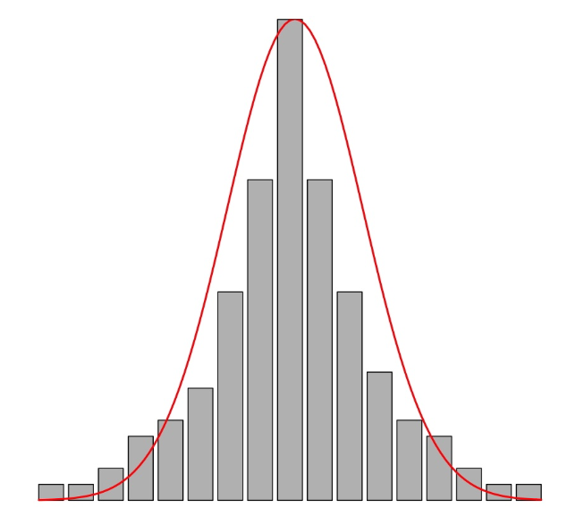
- Cuando el histograma tiene colas más cortas, y en particular menos valores atípicos, de lo esperado si tuviera la forma de una campana de Gauss, \(\beta_2< 0\); se dice que la variable es platicúrtica.
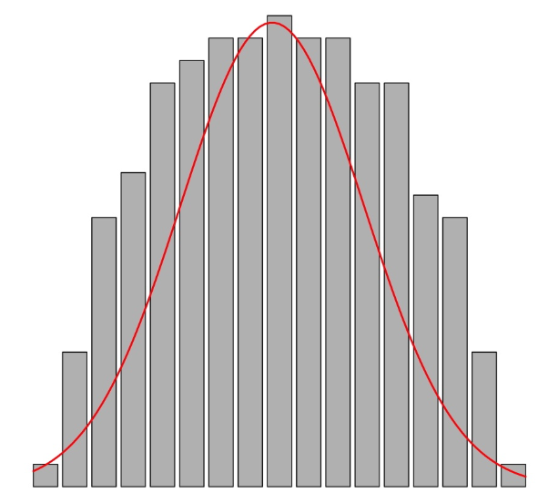
3.0.8 Estadísticos y gráficos con JAMOVI
En la ventana Descriptivas podéis calcular la mayoría de los estadísticos y gráficos explicados hasta ahora. Por ejemplo, los estadísticos que podéis calcular del vector de alturas usado en secciones anteriores son:
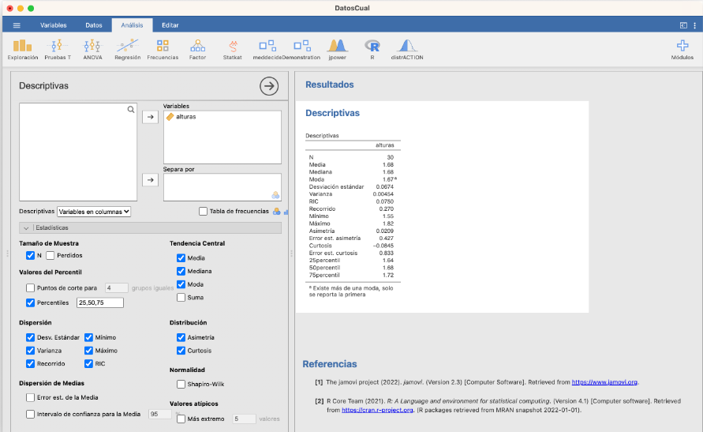
La varianza y la desviación típica que calcula son las muestrales y el RIC en la tabla en castellano es el rango intercuartílico, nuestro IQR. Aunque en este caso hayan dado lo mismo, los cuantiles los calcula con una definición diferente de la nuestra.
Por lo que refiere a gráficos, podéis dibujar, entre otros, histogramas de frecuencias relativas, boxplots y diagramas de puntos.
- Histograma:
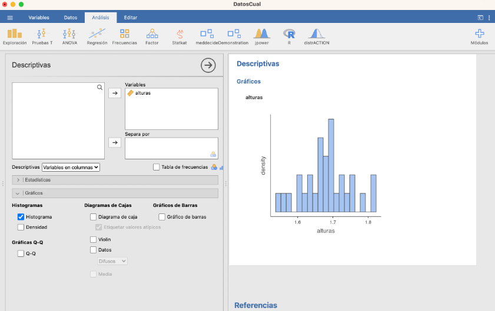
Como ya hemos comentado, en este histograma las clases son cerradas a la derecha.
- Boxplot:
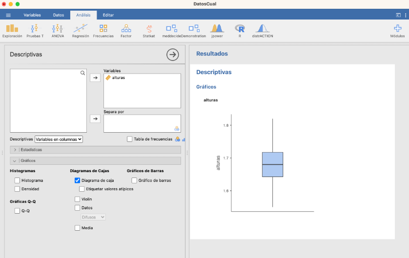
Los cuartiles los calcula con una definición diferente de la nuestra.
- Diagrama de puntos:
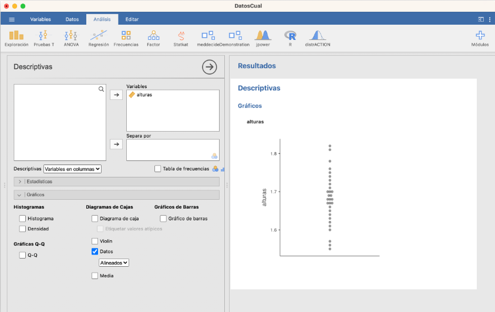
3.0.9 Estadísticos sobre datos agrupados
En nuestro lenguaje cotidiano, solemos agrupar datos cuantitativos sin que seamos conscientes de ello. Cuando decimos, por ejemplo, que la edad de alguien es de 18 años, no queremos decir que nació justo hoy hace 18 años, sino que ya ha cumplido los 18 años, pero aún no ha cumplido los 19; es decir, que agrupamos todas las edades que caen dentro del intervalo [18,19) en una misma clase, que llamamos “18 años”. Del mismo modo, que alguien mida 1.72 no significa que esta sea su altura exacta, con la precisión del grueso de un cabello, sino que su altura pertenece a un intervalo de valores en torno a 1.72 metros que identificamos con “1.72”. Bajo la calificación de “aprobado” agrupamos todas las notas mayores o iguales que 5 y menores que 7. Y estamos seguros de que se os ocurren otros ejemplos.
Muy a menudo, los datos cuantitativos se recogen directamente agrupados, como por ejemplo franjas salariales o el número de refrescos semanales como en la tabla de datos del primer ejemplo de este tema. Aunque estas clases definan un conjunto de datos ordinales es muy probable que nos interese interpretarlas como eso: clases resultado de agrupar datos cuantitativos. ¿Cómo podemos calcular los estadísticos? Está claro que de manera exacta es imposible si no conocemos los datos brutos, sin agrupar. Pero podemos intentar aproximarlos.
- Substituimos la moda por la clase modal: la clase de mayor frecuencia.
- Para calcular la media, la varianza, etc., para cada clase tomamos su punto medio, al que en este contexto llamaremos su marca de clase, y consideraremos que nuestra muestra está formada, para cada clase, por tantas copias de su marca como la frecuencia de la clase.
Ejemplo: Volvamos a la muestra de tensiones arteriales medias de 120 adultos y supongamos que nos han dado directamente los datos agrupados en 9 clases de amplitud 10:
| Clase | Frecuencia |
|---|---|
| [80,90) | 3 |
| [90,100) | 3 |
| [100,110) | 16 |
| [110,120) | 33 |
| [120,130) | 23 |
| [130,140) | 22 |
| [140,150) | 13 |
| [150,160) | 5 |
| [160,170) | 2 |
La clase modal es [110,120). Para aproximar la media y la varianza de la muestra original, tomaremos como marcas de clase los puntos medios de las clases, 85,95,…,165, y supondremos que la muestra está formada por 3 copias del valor 85, 3 copias del valor 95, 16 copias del valor 105, …, 2 copias del valor 165. Entonces:
Aproximamos la media de la muestra por \[ \frac{3\times 85+3\times 95+16\times 105+\cdots+2\times 165}{120}=123.75 \]
Aproximamos la varianza de la muestra por \[ \frac{3\times (85-123.75)^2+3\times (95-123.75)^2+16\times (105-123.75)^2+\cdots+2\times (165-123.75)^2}{120}=267.6 \]
Por lo que refiere a la mediana y los otros cuantiles de una variable cuantitativa agrupada, se han propuesto varios métodos para intentar aproximarlos a partir de las tablas de frecuencias de sus clases. Aquí explicaremos el más sencillo y lo ilustraremos con el ejemplo anterior. Por comodidad, vamos a añadir las frecuencias absolutas y relativas acumuladas de las clases a la tabla de frecuencias:
| Clase | Frecuencia | Frec. acum. | Frec. rel. acum. |
|---|---|---|---|
| [80,90) | 3 | 3 | 0.0250 |
| [90,100) | 3 | 6 | 0.0500 |
| [100,110) | 16 | 22 | 0.1833 |
| [110,120) | 33 | 55 | 0.4583 |
| [120,130) | 23 | 78 | 0.6500 |
| [130,140) | 22 | 100 | 0.8333 |
| [140,150) | 13 | 113 | 0.9417 |
| [150,160) | 5 | 118 | 0.9833 |
| [160,170) | 2 | 120 | 1.0000 |
En primer lugar buscamos en qué clase cae la mediana, es decir, qué clase contiene el valor que separa las dos mitades de la muestra: la llamaremos el intervalo crítico para la mediana. En nuestro ejemplo, será la primera clase cuya frecuencia relativa acumulada sea mayor o igual que 0.5. Se trata del intervalo [120,130). La mediana sería la media de los valores en las posiciones 60 y 61 tras ordenarlos. Como hasta justo antes de 120 hay 55 valores, es la media de los valores quinto y sexto de la clase [120,130), en la que hay 23.
Lo que haremos será suponer que estos 23 valores están igualmente distribuidos empezando por 120 y sin llegar a 130 (porque nuestras clases son cerradas por la izquierda y abiertas a la derecha). Por lo tanto suponemos que son \[ 120, 120+\frac{1}{23}\cdot 10, 120+\frac{2}{23}\cdot 10, 120+\frac{3}{23}\cdot 10,\ldots, 120+\frac{21}{23}\cdot 10, 120+\frac{22}{23}\cdot 10 \]
Los valores quinto y sexto son \(120+40/23=121.74\) y \(120+50/23=122.17\) y su media 121.96. Esta es nuestra aproximación de la mediana.
Nota
Si las clases fueran cerradas a la derecha, tomaríamos los valores \[ 120+\frac{1}{23}\cdot 10, 120+\frac{2}{23}\cdot 10, 120+\frac{3}{23}\cdot 10,\ldots, 120+\frac{21}{23}\cdot 10, 120+\frac{22}{23}\cdot 10, 130 \] Y si los extremos no pueden pertenecer a las clases, entonces tomaríamos los valores \[ 120+\frac{1}{24}\cdot 10, 120+\frac{2}{24}\cdot 10, 120+\frac{3}{24}\cdot 10,\ldots, 120+\frac{22}{24}\cdot 10, 120+\frac{23}{24}\cdot 10 \] En cada caso, luego tomaríamos la media del quinto y el sexto.
Un procedimiento similar se puede usar para aproximar cualquier cuantil \(Q_{p}\) de orden \(p\). Por ejemplo, busquemos el primer cuartil. Es el trigésimo valor de la muestra ordenada, y por lo tanto el octavo de la clase [110,120), que contiene 33 valores. Tomamos estos 33 valores igualmente distribuidos y empezando con 110: \[ 110, 110+\frac{1}{33}\cdot 10, 110+\frac{2}{33}\cdot 10, 110+\frac{3}{33}\cdot 10,\ldots, 110+\frac{31}{33}\cdot 10, 110+\frac{32}{33}\cdot 10 \] El octavo es \(110+70/33=112.12\). Esta es nuestra aproximación del segundo cuartil.
Ejercicios
Considerad el agrupamiento en 15 clases de la muestra de tensiones arteriales medias de 120 adultos. A partir de este agrupamiento, estimad los valores de la media, la varianza y la mediana de la muestra, y comparadlos con los obtenidos a partir de 9 clases. ¿Cuáles creéis que estiman mejor los estadísticos de la muestra original?
Considerad el diagrama de la siguiente figura, que muestra los perímetros braquiales derechos de 120 mujeres.
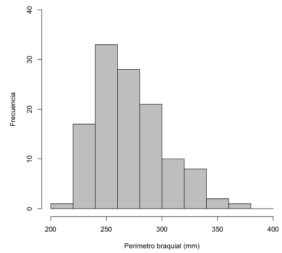
¿Qué tipo de gráfico es?
¿De qué tipo de datos es el perímetro braquial?
¿Cuál es la clase modal?
¿Cómo describiríais la asimetría de la muestra?
¿En qué clase cae la mediana de la muestra?
¿Qué estimáis que vale la mediana?
¿En qué clase cae el primer cuartil de la muestra?
¿Qué estimáis que vale el primer cuartil?
¿Qué estimáis que vale la media?
3.0.10 Datos cuantitativos bivariantes
Si tenemos observaciones de dos variables cuantitativas medidas sobre una misma muestra de \(n\) individuos, las recogemos en una tabla de datos bivariante, con las filas representando los individuos y las columnas representando las dos variables:
\[ \begin{array}{c|c|c} \textbf{Individuo} &\textbf{Variable 1} &\textbf{Variable 2}\\ \hline 1 & x_{1} & y_{1} \cr 2 & x_{2} & y_{2} \cr 3 & x_{3} & y_{3} \cr \vdots &\vdots & \vdots \cr n & x_{n} & y_{n} \end{array} \]
Podemos representar esta tabla por medio de un gráfico de dispersión (scatter plot): el gráfico de los puntos \((x_k,y_k)\).
Ejemplo:
Hemos medido la tensión arterial media (en mmHg) y el nivel de colesterol (en mg/dl) de 10 individuos y recogido estos valores en la tabla siguiente:
| Tensión | Colesterol | |
|---|---|---|
| 1 | 105.7 | 169.3 |
| 2 | 117.4 | 191.7 |
| 3 | 131.9 | 202.6 |
| 4 | 117.8 | 218.2 |
| 5 | 133.0 | 223.2 |
| 6 | 107.9 | 180.0 |
| 7 | 118.6 | 230.4 |
| 8 | 123.4 | 211.8 |
| 9 | 124.1 | 202.3 |
| 10 | 113.4 | 185.3 |
Su diagrama de dispersión es
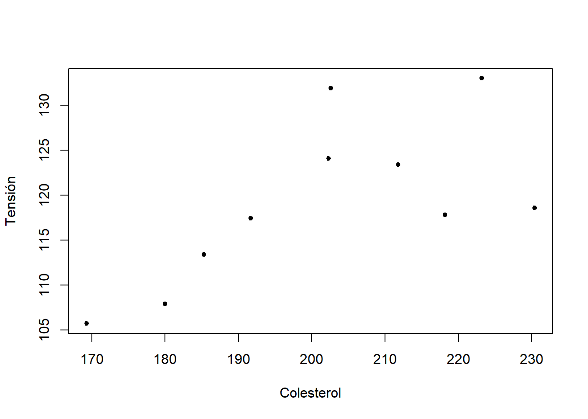
Una serie temporal es un caso particular de tabla de datos cuantitativos bivariante en la que la primera variable representa el paso del tiempo. En este caso, es conveniente unir con segmentos los puntos consecutivos en el tiempo para ayudar a visualizar la evolución de los datos en el tiempo.
Ejemplo:
Consideremos la siguiente tabla de los números diarios de defunciones por COVID-19 en la Baleares entre día 16 y día 31 de marzo de 2019:
| Día | Defunciones |
|---|---|
| 16 | 0 |
| 17 | 0 |
| 18 | 1 |
| 19 | 0 |
| 20 | 2 |
| 21 | 0 |
| 22 | 6 |
| 23 | 0 |
| 24 | 3 |
| 25 | 4 |
| 26 | 5 |
| 27 | 4 |
| 28 | 3 |
| 29 | 8 |
| 30 | 5 |
| 31 | 4 |
Se trata de una serie temporal. Su gráfico de dispersión es
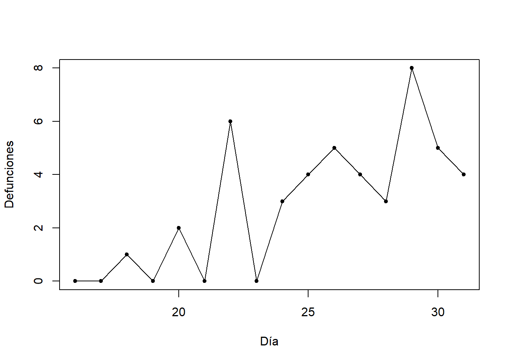
A menudo nos interesará medir la asociación (propensión a variar conjuntamente) de dos variables cuantitativas medidas sobre una misma muestra de individuos: por ejemplo, valorar la tendencia del nivel de colesterol a crecer con la tensión arterial media en la tabla del Ejemplo que venimos trabajando.
Uno de los estadísticos más usados con este fin es la covarianza. Su definición, para los vectores \(x=(x_1,\ldots,x_n)\) e \(y=(y_1,\ldots,y_n)\), de medias \(\overline{x}\) y \(\overline{y}\), respectivamente, es \[ s_{x,y}=\frac{\sum_{i=1}^n (x_i-\overline{x})(y_i-\overline{y})}{n} \]
Precaución
También hay una versión muestral, dividiendo por \(n-1\) en lugar de \(n\), que es la que calculan la mayoría de los paquetes estadísticos. El motivo es el mismo que ya explicamos con ocasión de la varianza: la covarianza muestral estima mejor la covarianza de las variables poblacionales que la versión “a secas”.
Importante
La covarianza de un vector consigo mismo es su varianza: \[ s_{x,x}=\frac{\sum_{i=1}^n (x_i-\overline{x})(x_i-\overline{x})}{n}=\frac{1}{n}\sum_{i=1}^n (x_i-\overline{x})^2=s_x^2 \]
El signo de la covarianza mide el signo de la asociación entre los dos vectores:
- La covarianza es positiva cuando \(x\) e \(y\) satisfacen la condición siguiente: si una de las dos variables crece, la otra también tiende a crecer; es decir, si \(x_i<x_j\), \(y_j\) tiende a ser mayor que \(y_i\).
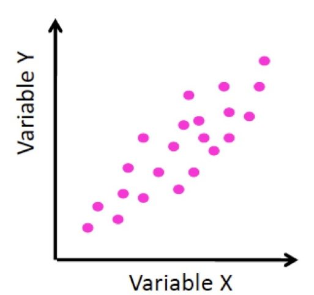
- La covarianza es negativa cuando \(x\) e \(y\) satisfacen la condición siguiente: si una de las dos variables crece, la otra tiende a decrecer; es decir, si \(x_i<x_j\), \(y_j\) tiende a ser menor que \(y_i\).
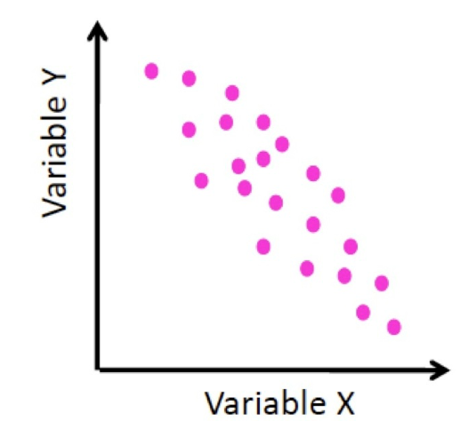
- Si la covarianza es muy cercana a 0, es porque no hay una tendencia clara al crecimiento o decrecimiento de \(y_i\) en función del de \(x_i\).
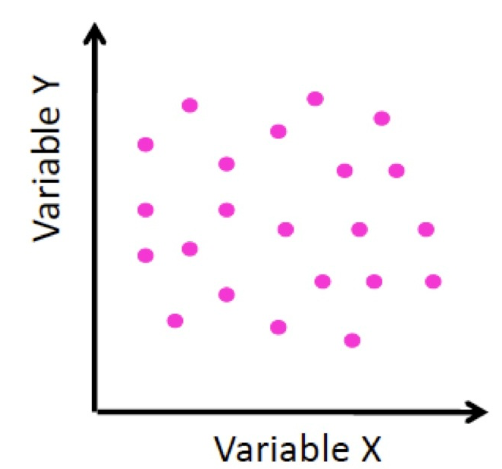
Importante
En particular, si las variables \(x\) e \(y\) son independientes, en el sentido de que el valor de \(x\) no influye para nada en el valor de \(y\), la covarianza de \(x\) e \(y\) es 0.
Ejemplo:
Volvamos a la tabla de tensiones arteriales medias y niveles de colesterol del ejemplo . Las medias de las variables son
\[ \begin{array}{l} \overline{\text{Tensión}}=\dfrac{105.7+117.4+131.9+\cdots+113.4}{10}=119.32\\ \overline{\text{Colesterol}}=\dfrac{169.3+191.7+202.6+\cdots+185.3}{10}=201.48 \end{array} \] y su covarianza es \[ \begin{array}{l} s_{\text{Tensión},\text{Colesterol}}\\ \quad =\dfrac{(105.7-119.32)(169.3-201.48)+(117.4-119.32)(191.7-201.48)+\cdots}{10}\\ \quad=110.9164 \end{array} \] Como esta covarianza es positiva, deducimos que los valores de la tensión media y el nivel de colesterol en esta muestra tienden a crecer juntos, como ya observamos en el diagrama de dispersión .
En general, la magnitud de la covarianza mide cuánto varían conjuntamente las variables. Por ejemplo, una covarianza positiva y muy grande no solo indica que cuando la \(x\) crece, la \(y\) tiende a crecer, sino que también nos indica que cuando la \(x\) es mucho más grande que la media, la \(y\) tiende a ser mucho más grande que la media. Esto hace que, por ejemplo, la covarianza dependa de las unidades de medida. Si por ejemplo hubiéramos medido los niveles de colesterol del ejemplo anterior en mg/cl, de manera que sus valores se dividieran por 10, la covarianza resultante quedaría dividida por 10.
Por ello a menudo se usa una versión normalizada de la covarianza, la correlación de Pearson, cuyo valor no depende de cambios de escala y tiene una interpretación sencilla (aunque no siempre corresponde con lo que queremos saber de nuestra muestra).
La correlación de Pearson de dos vectores de datos \(x\) e \(y\) de la misma longitud se define como su covarianza dividida por el producto de sus desviaciones típicas: \[ r_{x,y}=\frac{s_{x,y}}{s_xs_y} \]
Como el signo de \(r_{x,y}\) es el mismo que el de \(s_{x,y}\) y es 0 exactamente cuando \(s_{x,y}=0\), el signo de la correlación de Pearson tiene el mismo significado que el de la covarianza:
- \(r_{x,y}>0\) cuando \(y\) tiende a crecer si \(x\) crece
- \(r_{x,y}<0\) cuando \(y\) tiende a decrecer si \(x\) crece
- \(r_{x,y}\approx 0\) cuando no hay ninguna tendencia en este sentido; decimos entonces que \(x\) e \(y\) están incorreladas
- En particular, si \(x\) e \(y\) son independientes, \(r_{x,y}=0\)
Pero la correlación de Pearson lleva más información que la covarianza, porque mide la relación lineal entre los dos vectores, en el sentido de las propiedades siguientes:
\(r_{x,y}\) está siempre entre -1 y 1.
Cuanto más cerca está \(r_{x,y}\) de -1 o 1, más se aproximan los puntos \((x_i,y_i)\) a estar sobre una recta, que será creciente si \(r_{x,y}>0\) y decreciente si \(r_{x,y}<0\).
Y en concreto,
- Los puntos \((x_i,y_i)\) están sobre una recta creciente exactamente si, y solo si, \(r_{x,y}=1\).
- Los puntos \((x_i,y_i)\) están sobre una recta decreciente si, y solo si, \(r_{x,y}=-1\).
Ejemplo:
Seguimos con la tabla de tensiones arteriales medias y niveles de colesterol. Ya hemos obtenido su covarianza, \(s_{\text{Tensión},\text{Colesterol}}=110.9164\). Sus desviaciones típicas son \[ \begin{array}{l} s_{\text{Tensión}}=\sqrt{\dfrac{(105.7-119.32)^2+(117.4-119.32)^2+\cdots+(113.4-119.32)^2}{10}}=8.616\\ s_{\text{Colesterol}}=\sqrt{\dfrac{(169.3-201.48)^2+(191.7-201.48)^2+\cdots+(185.3-201.48)^2}{10}}=18.84 \end{array} \] por lo que su correlación de Pearson es \[ r_{\text{Tensión},\text{Colesterol}}=\frac{110.9164}{8.616\cdot 18.84}=0.683 \] Los pares de valores de tensión arterial media y el nivel de colesterol de los individuos de la muestra presentan una tendencia acusada a crecer conjuntamente siguiendo una recta.
Nota
Si una de las dos variables tiene desviación típica 0, en la fórmula de la correlación aparece un 0 en el denominador y no la podemos calcular. En este caso, se toma \(r_{x,y}=0\). El motivo es el siguiente. Supongamos que \(s_x=0\). Como ya hemos visto, esto quiere decir que todos los valores de \(x\) son iguales, y por lo tanto iguales al valor medio \(\overline{x}\). Pero entonces \(s_{x,y}=0\): el numerador de \(r_{x,y}\) también es 0.
Por lo tanto, si los puntos están sobre una recta horizontal o una recta vertical, la correlación es 0, por mucho que estén sobre una recta. Esto es consistente con el propiedad de que independencia implica correlación nula: si una de las variables es constante, los valores que toma son claramente independientes de los que toma la otra.
Gráficamente podemos visualizar la tendencia de los puntos de una tabla bivariante a estar sobre una recta añadiendo a su gráfico de dispersión su recta de regresión (para ser precisos, de regresión lineal por mínimos cuadrados, pero normalmente omitiremos esta apostilla). Se trata de la recta que más se aproxima a los puntos \((x_i,y_i)\) en el sentido siguiente.
Dada una recta \(y=ax+b\), el error que se comete al estimar con esta recta el valor \(y_i\) sobre el sujeto correspondiente al par \((x_i,y_i)\) es \(y_i-(ax_i+b)\). La recta de regresión es la que tiene coeficientes \(a,b\) que hacen mínima la suma de los cuadrados de estos errores, \[ \sum_{i=1}^n (y_i-(ax_i+b))^2 \]
Resulta que los coeficientes de esta recta de regresión son \[ a=\frac{s_{x,y}}{s_x^2},\quad b = \overline{y}-a\cdot \overline{x}. \]
Ejemplo:
Siguiendo con nuestro ejemplo de tensiones y niveles de colesterol, la recta de regresión del nivel de colesterol en función de la tensión media tiene pendiente \[ a=\frac{s_{\text{Tensión},\text{Colesterol}}}{s_{\text{Colesterol}}^2}=\frac{123.2}{19.86^2}=0.3124 \] y término independiente \[ b= \overline{\text{Tensión}}-a\cdot\overline{\text{Colesterol}} =119.32-0.3124\cdot201.48 = 56.378 \]
El gráfico de dispersión de los puntos junto a esta recta de regresión es el siguiente:
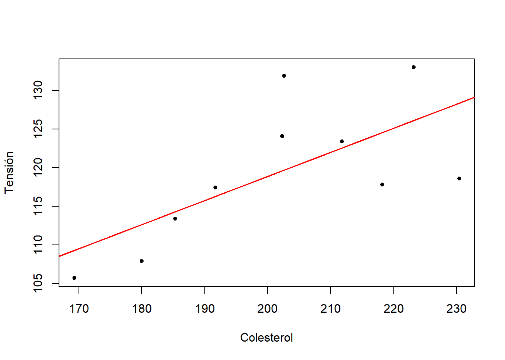
Con Jamovi podéis calcular la correlación de Pearson y dibujar un gráfico de dispersión con la recta de regresión en Regresión/Matriz de correlaciones:
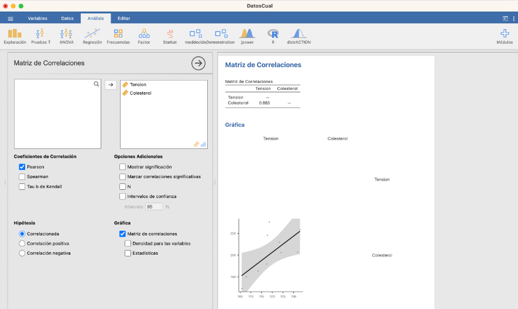
Otra posibilidad para dibujar el gráfico de dispersión es instalar el módulo scatr que añade al menú Dispersión un gráfico de dispersión con más opciones:
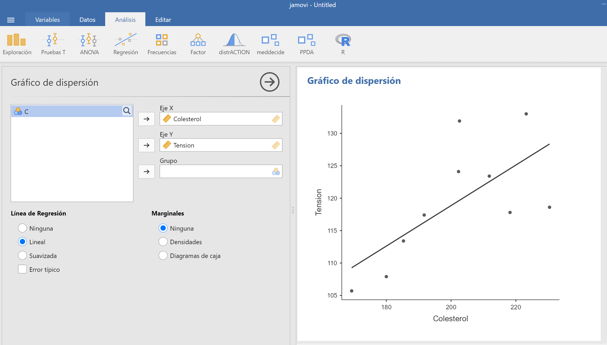
Por el momento Jamovi no ofrece la posibilidad de calcular covarianzas si no es a través del editor. La función que calcula la covarianza muestral es cov y se aplica a los dos vectores.
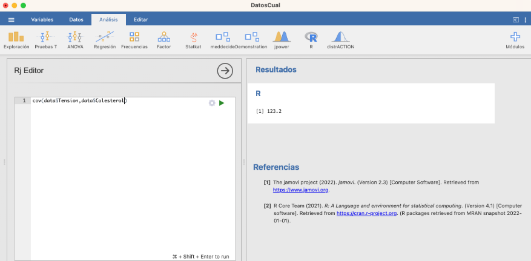
En el módulo Demonstration de JAMOVI tenéis la opción de generar muestras aleatorias de pares de valores y correlación (aproximadamente) la deseada, para haceros una idea de qué representan los diferentes valores de la correlación. Por ejemplo, un conjunto de 100 pares de valores con correlación aproximadamente 0.5:
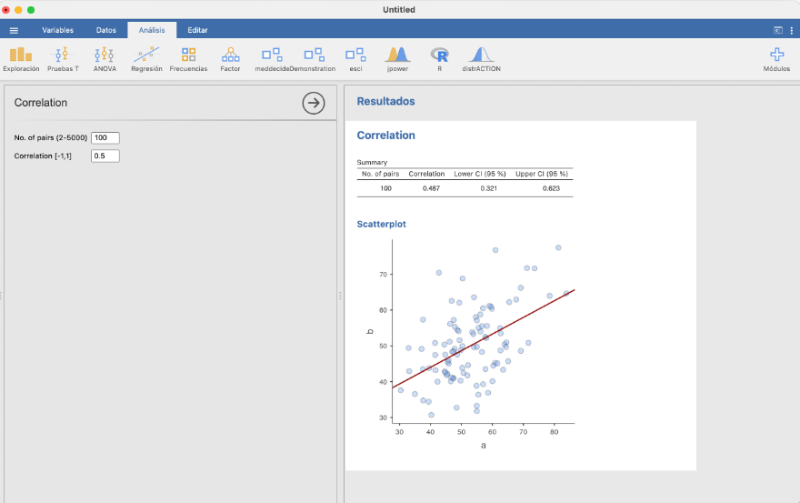
Importante
El valor de la correlación de Pearson no siempre es suficiente para valorar el ajuste de los puntos a una recta. Es siempre conveniente dibujar los puntos y la recta de regresión lineal y darles un vistazo.
Ejemplo:
F. Anscombe produjo los cuatro conjuntos de puntos descritos en la figura que sigue. Como podéis, ver, tienen ajustes muy diferentes a una recta, y en cambio resulta que tienen el mismo valor de \(r\): 0.816. Para más detalles, consultad la correspondiente entrada de la Wikipedia.
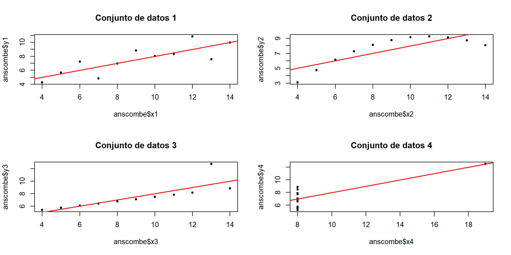
Nota
Ser incorrelados no es sinónimo de que no haya ninguna dependencia entre las dos variables. Por ejemplo, los conjuntos de puntos de la Figura @ref(fig:datasaurus) tienen correlación casi 0 (en concreto -0.004), y es claro que en cada caso hay una fuerte dependencia entre los valores de \(x\) y de \(y\). Lo que significa que la covarianza, o la correlación, sea 0 es que no hay relación entre el crecimiento de una variable y el de la otra.
Como hemos visto, la correlación de Pearson mide la dependencia lineal entre dos variables cuantitativas. Otras medidas de correlación miden otros tipos de dependencia. La alternativa más popular a la correlación de Pearson es la correlación de Spearman, \(r_S\), que mide la concordancia en el orden de los individuos según sus valores en las dos variables medidas. Se calcula, grosso modo, de la manera siguiente:
A cada individuo de la muestra le asignamos su posición (su rango) según el orden creciente de los valores \(x_i\).
A cada individuo de la muestra le asignamos su rango según el orden creciente de los valores \(y_i\).
Calculamos la correlación de Pearson de los vectores de rangos.
Importante
La correlación de Spearman también se puede usar para variables ordinales. ¡La de Pearson no!
Ejemplo:
Volvemos a nuestro ejemplo de tensiones y niveles de colesterol. Ampliamos la tabla de datos con los rangos de los individuos recogidos en la misma para cada variable:
| Tensión | Rango | Colesterol | Rango | |
|---|---|---|---|---|
| 1 | 105.7 | 1 | 169.3 | 1 |
| 2 | 117.4 | 4 | 191.7 | 4 |
| 3 | 131.9 | 9 | 202.6 | 6 |
| 4 | 117.8 | 5 | 218.2 | 8 |
| 5 | 133.0 | 10 | 223.2 | 9 |
| 6 | 107.9 | 2 | 180.0 | 2 |
| 7 | 118.6 | 6 | 230.4 | 10 |
| 8 | 123.4 | 7 | 211.8 | 7 |
| 9 | 124.1 | 8 | 202.3 | 5 |
| 10 | 113.4 | 3 | 185.3 | 3 |
La correlación de Spearman de las dos variables será la correlación de Pearson de sus vectores de rangos. Si la calculáis, da \({r_S}=0.73333\).
Nota
Una nota técnica, para los completistas. ¿Qué pasa si, al calcular los rangos, hay valores repetidos? Pues que se les asigna el mismo rango calculado de la manera siguiente:
- En primer lugar, a cada individuo de la muestra le asignamos un “rango provisional”: su posición según el orden creciente de los valores \(x_i\) y, en caso de igualdad de estos valores, según su orden de aparición en la tabla de datos.
- Entonces, para cada valor del vector, se asigna como rango “definitivo” a todos los individuos cuyo valor \(x\) es ese valor la media de sus posiciones.
Veamos un ejemplo.
Ejemplo:
Vamos a calcular los rangos de los individuos de la tabla de datos siguiente según su valor de la variable \(x\).
| Individuo | x |
|---|---|
| 1 | 1 |
| 2 | 2 |
| 3 | 1 |
| 4 | 1 |
| 5 | 2 |
| 6 | 4 |
| 7 | 4 |
| 8 | 3 |
Empezamos asignando rangos provisionales a los individuos, ordenándolos según su valor de \(x\) y en caso de empate de arriba abajo:
| Individuo | x | Posición |
|---|---|---|
| 1 | 1 | 1 |
| 2 | 2 | 4 |
| 3 | 1 | 2 |
| 4 | 1 | 3 |
| 5 | 2 | 5 |
| 6 | 4 | 7 |
| 7 | 4 | 8 |
| 8 | 3 | 6 |
Pasamos a asignar los rangos definitivos:
- A los tres individuos cuya \(x\) es 1 les asignamos como rango (1+2+3)/3=2.
- A los dos individuos cuya \(x\) es 2 les asignamos como rango (4+5)/2=4.5.
- Al único individuo cuya \(x\) es 3 le asignamos como rango definitivo su rango provisional: 6.
- A los dos individuos cuya \(x\) es 4 les asignamos como rango (7+8)/2=7.5.
| Individuo | x | Posición | Rango |
|---|---|---|---|
| 1 | 1 | 1 | 2.0 |
| 2 | 2 | 4 | 4.5 |
| 3 | 1 | 2 | 2.0 |
| 4 | 1 | 3 | 2.0 |
| 5 | 2 | 5 | 4.5 |
| 6 | 4 | 7 | 7.5 |
| 7 | 4 | 8 | 7.5 |
| 8 | 3 | 6 | 6.0 |
La correlación de Spearman se calcula con JAMOVI marcando Spearman en vez de Pearson en Regresión/Matriz de correlaciones.